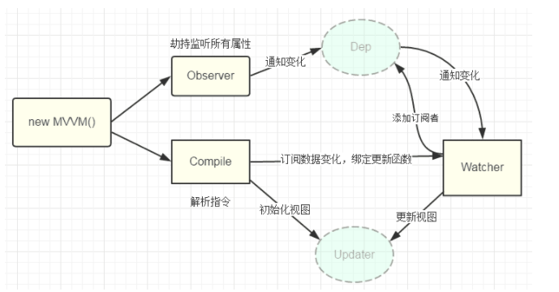

<!DOCTYPE html>
<html>
<head><meta name="generator" content="Hexo 3.8.0">
  <meta charset="utf-8">
  

  
  <title>Gzqqqqq</title>
  <meta name="viewport" content="width=device-width, initial-scale=1, maximum-scale=1">
  
  
  
  <meta property="og:type" content="website">
<meta property="og:title" content="Gzqqqqq">
<meta property="og:url" content="http://yoursite.com/index.html">
<meta property="og:site_name" content="Gzqqqqq">
<meta property="og:locale" content="default">
<meta name="twitter:card" content="summary">
<meta name="twitter:title" content="Gzqqqqq">
  
    <link rel="alternate" href="/atom.xml" title="Gzqqqqq" type="application/atom+xml">
  
  
    <link rel="icon" href="/images/default-avatar.jpeg">
  
  
    <link href="//fonts.googleapis.com/css?family=Source+Code+Pro" rel="stylesheet" type="text/css">
  
  <link rel="stylesheet" href="/css/style.css">
  <link rel="stylesheet" href="/css/highlight.css">
</head>
</html>
<body>
  <div id="fullpage" class="mobile-nav-right">
    
      <div id="wrapper" title="图片来自网络">
    
    
      <header id="header">
  <div id="nav-toggle" class="nav-toggle"></div>
  <div class="head-box global-width">
    <nav class="nav-box nav-right">
      
        <a class="nav-item" href="/" title>首页</a>
      
        <a class="nav-item" href="/archives" title>归档</a>
      
    </nav>
  </div>
</header>
      <div id="middlecontent" title class="global-width sidebar-right">
        <section id="main">
  
    <article id="post-Vue中MVVM模式实现数据的双向绑定的原理" class="article global-container article-type-post" itemscope itemprop="blogPost">
  
    <header class="article-header">
      
  
    <h1 itemprop="name">
      <a class="article-title" href="/2019/03/25/Vue中MVVM模式实现数据的双向绑定的原理/">Vue中MVVM模式实现数据双向绑定的原理</a>
    </h1>
  

    </header>
  
  <div class="article-meta">
    <a href="/2019/03/25/Vue中MVVM模式实现数据的双向绑定的原理/" class="article-date">
  <time datetime="2019-03-25T10:32:40.000Z" itemprop="datePublished">2019-03-25</time>
</a>
    
    
  <ul class="article-tag-list"><li class="article-tag-list-item"><a class="article-tag-list-link" href="/tags/vue/">vue</a></li></ul>

  </div>
  

  <div class="article-inner">
    
    <div class="article-content article-content-doorframe" itemprop="articleBody">
      
        <h3 id="什么是MVVM？"><a href="#什么是MVVM？" class="headerlink" title="什么是MVVM？"></a>什么是MVVM？</h3><p>MVVM就是一种模式，帮我们把数据和view视图关联起来的一种模式。Vue就是靠MVVM实现了数据的双向绑定和模板渲染。</p>
<h3 id="例子：搭建MVVM框架-实现data数据双向绑定："><a href="#例子：搭建MVVM框架-实现data数据双向绑定：" class="headerlink" title="例子：搭建MVVM框架,实现data数据双向绑定："></a>例子：搭建MVVM框架,实现data数据双向绑定：</h3><p>大致步骤：</p>
<h4 id="1-新建MVVM模板，用于和html中的节点关联展示页面-；"><a href="#1-新建MVVM模板，用于和html中的节点关联展示页面-；" class="headerlink" title="1. 新建MVVM模板，用于和html中的节点关联展示页面 ；"></a>1. 新建MVVM模板，用于和html中的节点关联展示页面 ；</h4><h4 id="2-模板的编译（显示view视图）"><a href="#2-模板的编译（显示view视图）" class="headerlink" title="2. 模板的编译（显示view视图）"></a>2. 模板的编译（显示view视图）</h4><p>编译显示视图是依靠编译模板：complie.js</p>
<h4 id="3-数据响应即数据劫持（观察数据变化-gt-调用set方法时触发notify通知观察者更新视图）"><a href="#3-数据响应即数据劫持（观察数据变化-gt-调用set方法时触发notify通知观察者更新视图）" class="headerlink" title="3. 数据响应即数据劫持（观察数据变化  -&gt; 调用set方法时触发notify通知观察者更新视图）"></a>3. 数据响应即数据劫持（观察数据变化  -&gt; 调用set方法时触发notify通知观察者更新视图）</h4><p>将原有的data属性改成get和set的形式</p>
<h4 id="4-watcher（观察者-gt-update方法通知视图更新）"><a href="#4-watcher（观察者-gt-update方法通知视图更新）" class="headerlink" title="4. watcher（观察者 -&gt; update方法通知视图更新）"></a>4. watcher（观察者 -&gt; update方法通知视图更新）</h4><p>在编译过程中，会new Watcher，此时就会添加一个watcher对象到Dep的数组中去进行监控</p>
<h4 id="5-等到数据变化时，dep数组中的watcher对象就调用notify进行通知更新"><a href="#5-等到数据变化时，dep数组中的watcher对象就调用notify进行通知更新" class="headerlink" title="5. 等到数据变化时，dep数组中的watcher对象就调用notify进行通知更新"></a>5. 等到数据变化时，dep数组中的watcher对象就调用notify进行通知更新</h4><h4 id="MVVM–Complie–observer–watcher的关系如下图"><a href="#MVVM–Complie–observer–watcher的关系如下图" class="headerlink" title="MVVM–Complie–observer–watcher的关系如下图"></a>MVVM–Complie–observer–watcher的关系如下图</h4><p>;</p>
<hr>
<h3 id="1、新建MVVM模板"><a href="#1、新建MVVM模板" class="headerlink" title="1、新建MVVM模板"></a>1、新建MVVM模板</h3><p>作用：是桥梁，将元素和数据绑定在一起</p>
<div class="highlight-box" autocomplete="off" autocorrect="off" autocapitalize="off" spellcheck="false" contenteditable="true" data-rel="BASH"><figure class="iseeu highlight /bash"><table><tr><td class="gutter"><pre><span class="line">1</span><br><span class="line">2</span><br><span class="line">3</span><br><span class="line">4</span><br><span class="line">5</span><br><span class="line">6</span><br><span class="line">7</span><br><span class="line">8</span><br><span class="line">9</span><br><span class="line">10</span><br><span class="line">11</span><br><span class="line">12</span><br><span class="line">13</span><br><span class="line">14</span><br><span class="line">15</span><br><span class="line">16</span><br><span class="line">17</span><br><span class="line">18</span><br><span class="line">19</span><br><span class="line">20</span><br><span class="line">21</span><br><span class="line">22</span><br><span class="line">23</span><br><span class="line">24</span><br><span class="line">25</span><br><span class="line">26</span><br><span class="line">27</span><br><span class="line">28</span><br><span class="line">29</span><br><span class="line">30</span><br><span class="line">31</span><br></pre></td><td class="code"><pre><span class="line">class MVVM&#123;</span><br><span class="line">	constructor(options)&#123;</span><br><span class="line">		/*首先将可以用的东西挂载到实例上*/</span><br><span class="line">		this.<span class="variable">$el</span> = options.el;</span><br><span class="line">		this.<span class="variable">$data</span> = options.data;</span><br><span class="line">		</span><br><span class="line">		/*如果有要编译的模板，就开始编译*/</span><br><span class="line">		<span class="keyword">if</span>(this.<span class="variable">$el</span>)&#123;</span><br><span class="line">			/*数据劫持，把对象的所有属性，改成get和<span class="built_in">set</span>方法*/</span><br><span class="line">			new Observer(this.<span class="variable">$data</span>)</span><br><span class="line">			/*用vm代理数据vm.<span class="variable">$data</span>*/</span><br><span class="line">			this.proxyData(this.<span class="variable">$data</span>);</span><br><span class="line">			/*用数据和元素进行编译*/</span><br><span class="line">			new Compile(this.<span class="variable">$el</span>,this)</span><br><span class="line">		&#125;</span><br><span class="line">	&#125;</span><br><span class="line">	</span><br><span class="line">	&lt;!--设置代理--&gt;</span><br><span class="line">	<span class="function"><span class="title">proxyData</span></span>()&#123;</span><br><span class="line">		Object.keys(data).forEach(key=&gt;&#123;</span><br><span class="line">			Object.defineProperty(this,key,&#123;</span><br><span class="line">				<span class="function"><span class="title">get</span></span>()&#123;</span><br><span class="line">					<span class="built_in">return</span> data[key];</span><br><span class="line">				&#125;,</span><br><span class="line">				<span class="built_in">set</span>(newValue)&#123;</span><br><span class="line">					data[key] = newValue;</span><br><span class="line">				&#125;</span><br><span class="line">			&#125;)</span><br><span class="line">		&#125;);</span><br><span class="line">	&#125;</span><br><span class="line">&#125;</span><br></pre></td></tr></table></figure></div>
<hr>
<h3 id="2、对数据和元素进行编译-Complie"><a href="#2、对数据和元素进行编译-Complie" class="headerlink" title="2、对数据和元素进行编译 Complie"></a>2、对数据和元素进行编译 Complie</h3><p>编译分三步：</p>
<h4 id="1-先把这些真实的DOM移入到内存中（操作元素性能好、快）使用fragment"><a href="#1-先把这些真实的DOM移入到内存中（操作元素性能好、快）使用fragment" class="headerlink" title="(1) 先把这些真实的DOM移入到内存中（操作元素性能好、快）使用fragment"></a>(1) 先把这些真实的DOM移入到内存中（操作元素性能好、快）使用fragment</h4><h4 id="2-编译-gt-提取想要的元素节点-v-model-和文本节点"><a href="#2-编译-gt-提取想要的元素节点-v-model-和文本节点" class="headerlink" title="(2) 编译 =&gt; 提取想要的元素节点 v-model 和文本节点 "></a>(2) 编译 =&gt; 提取想要的元素节点 v-model 和文本节点 {{}}</h4><h4 id="3-把编译好的fragment放回页面中"><a href="#3-把编译好的fragment放回页面中" class="headerlink" title="(3) 把编译好的fragment放回页面中"></a>(3) 把编译好的fragment放回页面中</h4><p>整个过程结束后，页面就可以显示模板中的数据</p>
<div class="highlight-box" autocomplete="off" autocorrect="off" autocapitalize="off" spellcheck="false" contenteditable="true" data-rel="BASH"><figure class="iseeu highlight /bash"><table><tr><td class="gutter"><pre><span class="line">1</span><br><span class="line">2</span><br><span class="line">3</span><br><span class="line">4</span><br><span class="line">5</span><br><span class="line">6</span><br><span class="line">7</span><br><span class="line">8</span><br><span class="line">9</span><br><span class="line">10</span><br><span class="line">11</span><br><span class="line">12</span><br><span class="line">13</span><br><span class="line">14</span><br><span class="line">15</span><br><span class="line">16</span><br><span class="line">17</span><br><span class="line">18</span><br><span class="line">19</span><br><span class="line">20</span><br><span class="line">21</span><br><span class="line">22</span><br><span class="line">23</span><br><span class="line">24</span><br><span class="line">25</span><br><span class="line">26</span><br><span class="line">27</span><br><span class="line">28</span><br><span class="line">29</span><br><span class="line">30</span><br><span class="line">31</span><br><span class="line">32</span><br><span class="line">33</span><br><span class="line">34</span><br><span class="line">35</span><br><span class="line">36</span><br><span class="line">37</span><br><span class="line">38</span><br><span class="line">39</span><br><span class="line">40</span><br><span class="line">41</span><br><span class="line">42</span><br><span class="line">43</span><br><span class="line">44</span><br><span class="line">45</span><br><span class="line">46</span><br><span class="line">47</span><br><span class="line">48</span><br><span class="line">49</span><br><span class="line">50</span><br><span class="line">51</span><br><span class="line">52</span><br><span class="line">53</span><br><span class="line">54</span><br><span class="line">55</span><br><span class="line">56</span><br><span class="line">57</span><br><span class="line">58</span><br><span class="line">59</span><br><span class="line">60</span><br><span class="line">61</span><br><span class="line">62</span><br><span class="line">63</span><br><span class="line">64</span><br><span class="line">65</span><br><span class="line">66</span><br><span class="line">67</span><br><span class="line">68</span><br><span class="line">69</span><br><span class="line">70</span><br><span class="line">71</span><br><span class="line">72</span><br><span class="line">73</span><br><span class="line">74</span><br><span class="line">75</span><br><span class="line">76</span><br><span class="line">77</span><br><span class="line">78</span><br><span class="line">79</span><br><span class="line">80</span><br><span class="line">81</span><br><span class="line">82</span><br><span class="line">83</span><br><span class="line">84</span><br><span class="line">85</span><br><span class="line">86</span><br><span class="line">87</span><br><span class="line">88</span><br><span class="line">89</span><br><span class="line">90</span><br><span class="line">91</span><br><span class="line">92</span><br><span class="line">93</span><br><span class="line">94</span><br><span class="line">95</span><br><span class="line">96</span><br><span class="line">97</span><br><span class="line">98</span><br><span class="line">99</span><br><span class="line">100</span><br><span class="line">101</span><br><span class="line">102</span><br><span class="line">103</span><br><span class="line">104</span><br><span class="line">105</span><br><span class="line">106</span><br><span class="line">107</span><br><span class="line">108</span><br><span class="line">109</span><br><span class="line">110</span><br><span class="line">111</span><br><span class="line">112</span><br><span class="line">113</span><br><span class="line">114</span><br><span class="line">115</span><br><span class="line">116</span><br><span class="line">117</span><br><span class="line">118</span><br><span class="line">119</span><br><span class="line">120</span><br><span class="line">121</span><br><span class="line">122</span><br><span class="line">123</span><br><span class="line">124</span><br><span class="line">125</span><br><span class="line">126</span><br><span class="line">127</span><br><span class="line">128</span><br><span class="line">129</span><br><span class="line">130</span><br><span class="line">131</span><br><span class="line">132</span><br><span class="line">133</span><br><span class="line">134</span><br><span class="line">135</span><br><span class="line">136</span><br><span class="line">137</span><br><span class="line">138</span><br><span class="line">139</span><br><span class="line">140</span><br><span class="line">141</span><br><span class="line">142</span><br><span class="line">143</span><br><span class="line">144</span><br><span class="line">145</span><br><span class="line">146</span><br><span class="line">147</span><br><span class="line">148</span><br><span class="line">149</span><br><span class="line">150</span><br><span class="line">151</span><br><span class="line">152</span><br><span class="line">153</span><br><span class="line">154</span><br><span class="line">155</span><br><span class="line">156</span><br><span class="line">157</span><br><span class="line">158</span><br><span class="line">159</span><br><span class="line">160</span><br><span class="line">161</span><br><span class="line">162</span><br><span class="line">163</span><br><span class="line">164</span><br><span class="line">165</span><br><span class="line">166</span><br><span class="line">167</span><br><span class="line">168</span><br><span class="line">169</span><br><span class="line">170</span><br><span class="line">171</span><br><span class="line">172</span><br></pre></td><td class="code"><pre><span class="line">/*模板的编译,vm就是实例*/</span><br><span class="line">class Compile&#123;</span><br><span class="line">	constructor(el,vm)&#123;</span><br><span class="line">		/*我们需要的是节点*/</span><br><span class="line">		/*但是可以传入DOM(document.getElementById(<span class="string">'app'</span>))，也可以传入字符串‘<span class="comment">#app’，需要进行判断*/</span></span><br><span class="line">		this.el = this.isElementNode(el)?el:document.querySelector(el); </span><br><span class="line">		this.vm = vm;</span><br><span class="line">		</span><br><span class="line">		/*如果这个元素能获取到，才开始编译*/</span><br><span class="line">		<span class="keyword">if</span>(this.el)&#123;</span><br><span class="line">			/*1、先把这些真实的DOM移入到内存中（操作元素性能好、快）  使用fragment*/</span><br><span class="line">			<span class="built_in">let</span> fragment = this.node2fragment(this.el);  /*返回一个内存中的DOM*/</span><br><span class="line">			/*2、编译=&gt;提取想要的元素节点 v-model 和文本节点 &#123;&#123;&#125;&#125; */</span><br><span class="line">			this.compile(fragment);</span><br><span class="line">			/*3、把编译好的fragment放回页面中*/</span><br><span class="line">			this.el.appendChild(fragment);</span><br><span class="line">		&#125;</span><br><span class="line">		</span><br><span class="line">	&#125;</span><br><span class="line">	</span><br><span class="line">	/*辅助方法*/</span><br><span class="line">	/*是不是一个元素节点*/</span><br><span class="line">	isElementNode(node)&#123;</span><br><span class="line">		<span class="built_in">return</span> node.nodeType === 1    /*表示元素节点*/</span><br><span class="line">	&#125;</span><br><span class="line">	/*判断是不是指令v-*/</span><br><span class="line">	isDirective(name)&#123;</span><br><span class="line">		<span class="built_in">return</span> name.includes(<span class="string">'v-'</span>);</span><br><span class="line">	&#125;</span><br><span class="line">	</span><br><span class="line">	</span><br><span class="line">	/*核心方法*/</span><br><span class="line">	/*1、将el中的内容全部放入内存中进行操作*/</span><br><span class="line">	node2fragment(el)&#123;</span><br><span class="line">		/*创建文档碎片---不是真实的dom节点，而是内存中的dom节点*/</span><br><span class="line">		<span class="built_in">let</span> fragment = document.createDocumentFragment();</span><br><span class="line">		<span class="built_in">let</span> firstChild;    /*真实DOM中的第一个元素*/</span><br><span class="line">		</span><br><span class="line">		/*每次将第一个插入到内存中*/</span><br><span class="line">		<span class="keyword">while</span>(firstChild = el.firstChild)&#123; </span><br><span class="line">			//console.log(firstChild);</span><br><span class="line">			fragment.appendChild(firstChild);</span><br><span class="line">		&#125;</span><br><span class="line">		/*追加的同时，真实DOM中的元素也会被移除，相当于把真实DOM中的元素全部移动到内存中来*/</span><br><span class="line">		</span><br><span class="line">		<span class="built_in">return</span> fragment; /*返回内存中的节点，此时页面为空*/</span><br><span class="line">	&#125;</span><br><span class="line">	</span><br><span class="line">	/*编译内存中的dom节点*/</span><br><span class="line">	compile(fragment)&#123;</span><br><span class="line">		/*需要递归*/</span><br><span class="line">		<span class="built_in">let</span> childNodes = fragment.childNodes;</span><br><span class="line">		Array.from(childNodes).forEach(node=&gt;&#123;</span><br><span class="line">			<span class="keyword">if</span>(this.isElementNode(node))&#123;</span><br><span class="line">				/*是元素节点还需要继续深入递归 --- 判断是否有v-*/</span><br><span class="line">				/*这里编译元素*/</span><br><span class="line">				this.compileElement(node);</span><br><span class="line">				this.compile(node);</span><br><span class="line">			&#125;<span class="keyword">else</span>&#123;</span><br><span class="line">				/*是文本节点 --- 判断是否有&#123;&#123;&#125;&#125;*/</span><br><span class="line">				/*这里编译文本*/</span><br><span class="line">				this.compileText(node);</span><br><span class="line">			&#125;</span><br><span class="line">		&#125;);</span><br><span class="line">	&#125;</span><br><span class="line">	</span><br><span class="line">	compileElement(node)&#123;</span><br><span class="line">		/*带v-model的元素*/</span><br><span class="line">		<span class="built_in">let</span> attrs = node.attributes;  /*取出当前节点的属性*/</span><br><span class="line">		/*循环属性，查看是否带v-*/</span><br><span class="line">		Array.from(attrs).forEach(attr=&gt;&#123;</span><br><span class="line">			/*判断节点属性是否包含v-*/</span><br><span class="line">			<span class="built_in">let</span> attrName = attr.name;</span><br><span class="line">			<span class="keyword">if</span>(this.isDirective(attrName))&#123;</span><br><span class="line">				/*取到对应的值，放到节点上*/</span><br><span class="line">				/*1、需要一个知道当前的node 2、需要vm中的<span class="variable">$data</span>数据  3、attr的value*/</span><br><span class="line">				<span class="built_in">let</span> expr = attr.value;</span><br><span class="line">				/*获取指令类型*/</span><br><span class="line">				<span class="built_in">let</span> <span class="built_in">type</span> = attrName.slice(2); /*从第三个字符开始截取*/</span><br><span class="line">				/*方法二：<span class="built_in">let</span> [,<span class="built_in">type</span>] = attrName.split(<span class="string">'-'</span>)*/  /*分割成数组赋值*/</span><br><span class="line">				/*......一系列操作*/</span><br><span class="line">				CompileUtil[<span class="built_in">type</span>](node,this.vm,expr);</span><br><span class="line">				/*作用：去vm实例上取对应的expr值放到node节点里面*/</span><br><span class="line">			&#125;</span><br><span class="line">		&#125;);</span><br><span class="line">	&#125;</span><br><span class="line">	</span><br><span class="line">	compileText(node)&#123;</span><br><span class="line">		/*带&#123;&#123;&#125;&#125;的文本*/</span><br><span class="line">		<span class="built_in">let</span> expr = node.textContent;  /*取文本中的内容*/</span><br><span class="line">		/*使用正则*/</span><br><span class="line">		<span class="built_in">let</span> reg = /\&#123;\&#123;([^&#125;]+)\&#125;\&#125;/g;  /*&#123;需要转义，（）表示分组，^表示不包含，+号表示至少一个*/</span><br><span class="line">		<span class="keyword">if</span>(reg.test(expr))&#123;</span><br><span class="line">			/*1、需要一个知道当前的node 2、需要vm中的this.<span class="variable">$data</span>数据  3、text*/</span><br><span class="line">			/*......一系列操作*/</span><br><span class="line">			CompileUtil[<span class="string">'text'</span>](node,this.vm,expr);</span><br><span class="line">		&#125;</span><br><span class="line">	&#125;</span><br><span class="line">&#125;</span><br><span class="line"></span><br><span class="line"></span><br><span class="line">CompileUtil = &#123;</span><br><span class="line">	/*获取实例上对应的数据*/</span><br><span class="line">	getVal(vm,expr)&#123;</span><br><span class="line">		expr = expr.split(<span class="string">'.'</span>);  /*[message,a,b,……] ，在前面一个取出来的基础上依次取出，使用reduce*/</span><br><span class="line">		<span class="built_in">return</span> expr.reduce((prev,next)=&gt;&#123;</span><br><span class="line">			<span class="built_in">return</span> prev[next];    /*取出的结果返回给下一个prev*/</span><br><span class="line">		&#125;,vm.<span class="variable">$data</span>);  /*vm.<span class="variable">$data</span>指定为首个prev*/</span><br><span class="line">	&#125;,</span><br><span class="line">	</span><br><span class="line">	setVal(vm,expr,value)&#123;    /*expr可能是[message.a]*/</span><br><span class="line">		expr = expr.split(<span class="string">'.'</span>);</span><br><span class="line">		<span class="built_in">return</span> expr.reduce((prev,next,currentIndex)=&gt;&#123;</span><br><span class="line">			/*找到最后一级时就该赋值*/</span><br><span class="line">			<span class="keyword">if</span>(currentIndex == expr.length-1)&#123;</span><br><span class="line">				<span class="built_in">return</span> prev[next] = value;</span><br><span class="line">			&#125;</span><br><span class="line">			<span class="built_in">return</span> prev[next];</span><br><span class="line">		&#125;,vm.<span class="variable">$data</span>);</span><br><span class="line">	&#125;,</span><br><span class="line">	</span><br><span class="line">	/*获取编译文本后的值*/</span><br><span class="line">	/*<span class="built_in">return</span> arguments[1];  /*&#123;&#123;&#123;message.a&#125;&#125; ==&gt; message.a*/</span><br><span class="line">	getTextVal(vm,expr)&#123;</span><br><span class="line">		<span class="built_in">return</span> expr.replace(/\&#123;\&#123;([^&#125;]+)\&#125;\&#125;/g,(...arguments)=&gt;&#123;</span><br><span class="line">			<span class="built_in">return</span> this.getVal(vm,arguments[1]);</span><br><span class="line">		&#125;);</span><br><span class="line">	&#125;,</span><br><span class="line">	</span><br><span class="line">	text(node,vm,expr)&#123;   /*文本处理*/</span><br><span class="line">		<span class="built_in">let</span> updateFn = this.update[<span class="string">'textUpdate'</span>];</span><br><span class="line">		/*&#123;&#123;&#123;message.a&#125;&#125; =&gt; hello   替换*/</span><br><span class="line">		<span class="built_in">let</span> value = this.getTextVal(vm,expr);</span><br><span class="line">		</span><br><span class="line">		/*给每一个&#123;&#123;&#125;&#125;增加一个watcher，并且在watcher中保存旧值，一变化就更新视图*/</span><br><span class="line">		expr.replace(/\&#123;\&#123;([^&#125;]+)\&#125;\&#125;/g,(...arguments)=&gt;&#123;</span><br><span class="line">			new Watcher(vm,arguments[1],(newValue)=&gt;&#123;</span><br><span class="line">				/*如果数据变化了，文本需要重新获取依赖的数据，更新文本的内容*/</span><br><span class="line">				updateFn &amp;&amp; updateFn(node,this.getTextVal(vm,expr));</span><br><span class="line">			&#125;);</span><br><span class="line">		&#125;);</span><br><span class="line">		updateFn &amp;&amp; updateFn(node,value);</span><br><span class="line">	&#125;,</span><br><span class="line">	</span><br><span class="line">	model(node,vm,expr)&#123;  /*输入框处理*/</span><br><span class="line">		<span class="built_in">let</span> updateFn = this.update[<span class="string">'modelUpdate'</span>];</span><br><span class="line">		/*加一个检控（观察者），数据变化后调用这个watcher的callback*/</span><br><span class="line">		new Watcher(vm,expr,(newValue)=&gt;&#123;</span><br><span class="line">			/*当值变化后，会调用<span class="built_in">cd</span>函数，将新值传递过来（）*/</span><br><span class="line">			updateFn &amp;&amp; updateFn(node,this.getVal(vm,expr));</span><br><span class="line">		&#125;);</span><br><span class="line">		</span><br><span class="line">		/*绑定输入事件*/</span><br><span class="line">		node.addEventListener(<span class="string">'input'</span>,(e)=&gt;&#123;</span><br><span class="line">			<span class="built_in">let</span> newValue = e.target.value;</span><br><span class="line">			this.setVal(vm,expr,newValue);</span><br><span class="line">		&#125;)</span><br><span class="line">		</span><br><span class="line">		/*expr======<span class="string">'message.a'</span>  用split分割[message,a]------&gt;调用getVal()获取该值*/</span><br><span class="line">		updateFn &amp;&amp; updateFn(node,this.getVal(vm,expr));</span><br><span class="line">	&#125;,</span><br><span class="line">	update:&#123;</span><br><span class="line">		/*文本更新*/</span><br><span class="line">		textUpdate(node,value)&#123;</span><br><span class="line">			node.textContent = value;</span><br><span class="line">		&#125;,</span><br><span class="line">		/*输入框更新*/</span><br><span class="line">		modelUpdate(node,value)&#123;</span><br><span class="line">			node.value = value;</span><br><span class="line">		&#125;</span><br><span class="line">	&#125;</span><br><span class="line">&#125;</span><br></pre></td></tr></table></figure></div>
<hr>
<h3 id="3、观察者-Observer"><a href="#3、观察者-Observer" class="headerlink" title="3、观察者 Observer"></a>3、观察者 Observer</h3><p>主要是对模板中的data进行数据劫持，即响应式变化。<br>操作就是给每一个data数据设置他们的get和set方法，后面通过在get和set方法中进行数据的获取和更新操作。</p>
<p>类Dep实际为一个数组，用来存储被观察的的数据的watcher（观察者–&gt;在编译时get操作中调入Dep数组，待后期观察变化），当data变化，则调用watcher的更新方法进行更新。</p>
<div class="highlight-box" autocomplete="off" autocorrect="off" autocapitalize="off" spellcheck="false" contenteditable="true" data-rel="BASH"><figure class="iseeu highlight /bash"><table><tr><td class="gutter"><pre><span class="line">1</span><br><span class="line">2</span><br><span class="line">3</span><br><span class="line">4</span><br><span class="line">5</span><br><span class="line">6</span><br><span class="line">7</span><br><span class="line">8</span><br><span class="line">9</span><br><span class="line">10</span><br><span class="line">11</span><br><span class="line">12</span><br><span class="line">13</span><br><span class="line">14</span><br><span class="line">15</span><br><span class="line">16</span><br><span class="line">17</span><br><span class="line">18</span><br><span class="line">19</span><br><span class="line">20</span><br><span class="line">21</span><br><span class="line">22</span><br><span class="line">23</span><br><span class="line">24</span><br><span class="line">25</span><br><span class="line">26</span><br><span class="line">27</span><br><span class="line">28</span><br><span class="line">29</span><br><span class="line">30</span><br><span class="line">31</span><br><span class="line">32</span><br><span class="line">33</span><br><span class="line">34</span><br><span class="line">35</span><br><span class="line">36</span><br><span class="line">37</span><br><span class="line">38</span><br><span class="line">39</span><br><span class="line">40</span><br><span class="line">41</span><br><span class="line">42</span><br><span class="line">43</span><br><span class="line">44</span><br><span class="line">45</span><br><span class="line">46</span><br><span class="line">47</span><br><span class="line">48</span><br><span class="line">49</span><br><span class="line">50</span><br><span class="line">51</span><br><span class="line">52</span><br><span class="line">53</span><br><span class="line">54</span><br><span class="line">55</span><br><span class="line">56</span><br><span class="line">57</span><br><span class="line">58</span><br><span class="line">59</span><br><span class="line">60</span><br><span class="line">61</span><br><span class="line">62</span><br><span class="line">63</span><br><span class="line">64</span><br><span class="line">65</span><br></pre></td><td class="code"><pre><span class="line">class Observer&#123;</span><br><span class="line">	constructor(data)&#123;</span><br><span class="line">		this.observe(data);</span><br><span class="line">	&#125;</span><br><span class="line">	</span><br><span class="line">	observe(data)&#123;</span><br><span class="line">		/*要对这个data数据，将原有的属性改成<span class="built_in">set</span>和get的形式*/</span><br><span class="line">		<span class="keyword">if</span>(!data || typeof data !== <span class="string">'object'</span>)&#123;</span><br><span class="line">			/*如果数据不存在，或者不是对象，则不需要劫持*/</span><br><span class="line">			<span class="built_in">return</span>;</span><br><span class="line">		&#125;</span><br><span class="line">		/*否则要将数据一一劫持*/</span><br><span class="line">		Object.keys(data).forEach(key=&gt;&#123;</span><br><span class="line">			/*劫持数据   数据变化了进行响应式*/</span><br><span class="line">			this.defineReactive(data,key,data[key]);</span><br><span class="line">			/*如果data[key]是一个对象，需要继续劫持*/</span><br><span class="line">			this.observe(data[key]);   /*深度递归劫持*/</span><br><span class="line">		&#125;);</span><br><span class="line">	&#125;</span><br><span class="line">	</span><br><span class="line">	/*定义数据劫持（响应式劫持）*/</span><br><span class="line">	defineReactive(obj,key,value)&#123;</span><br><span class="line">		/*以前写法*/</span><br><span class="line">		//obj.key = value;</span><br><span class="line"></span><br><span class="line">		<span class="built_in">let</span> that = this;	</span><br><span class="line">		<span class="built_in">let</span> dep = new Dep();  /*每个变化的数据，都会对应一个数组，这个数组是存放所有的更新操作*/</span><br><span class="line">		Object.defineProperty(obj,key,&#123;</span><br><span class="line">			enumerable:<span class="literal">true</span>, /*可枚举*/</span><br><span class="line">			configurable:<span class="literal">true</span>, /*可删除*/</span><br><span class="line">			<span class="function"><span class="title">get</span></span>()&#123;  /*当取值时调用的方法*/</span><br><span class="line">				//todo……</span><br><span class="line">				Dep.target &amp;&amp; dep.addSub(Dep.target);</span><br><span class="line">				<span class="built_in">return</span> value;</span><br><span class="line">			&#125;,</span><br><span class="line">			<span class="built_in">set</span>(newValue)&#123;</span><br><span class="line">				//todo……</span><br><span class="line">				/*当data属性中设置值时，更改获取的属性的值*/</span><br><span class="line">				<span class="keyword">if</span>(newValue != value)&#123;</span><br><span class="line">					/*这里的this不是实例*/</span><br><span class="line">					that.observe(newValue); /*如果是对象，继续劫持*/</span><br><span class="line">					value = newValue;</span><br><span class="line">					dep.notify(); /*通知所有人数据更新了*/</span><br><span class="line">				&#125;</span><br><span class="line">			&#125;</span><br><span class="line">		&#125;); </span><br><span class="line">	&#125;</span><br><span class="line">&#125;</span><br><span class="line"></span><br><span class="line"></span><br><span class="line">/*Dep作用：一调用get就存入一个watcher观察者，一调用<span class="built_in">set</span>就调用notify通知更新*/</span><br><span class="line">/*发布订阅， 就是一个数组*/</span><br><span class="line"></span><br><span class="line">class Dep&#123;</span><br><span class="line">	<span class="function"><span class="title">constructor</span></span>()&#123;</span><br><span class="line">		/*订阅的数组*/</span><br><span class="line">		this.subs = []</span><br><span class="line">	&#125;</span><br><span class="line">	addSub(watcher)&#123;</span><br><span class="line">		this.subs.push(watcher);</span><br><span class="line">	&#125;</span><br><span class="line">	<span class="function"><span class="title">notify</span></span>()&#123;</span><br><span class="line">		this.subs.forEach(watcher=&gt;watcher.update());</span><br><span class="line">	&#125;</span><br><span class="line">&#125;</span><br></pre></td></tr></table></figure></div>
<hr>
<h3 id="4、观察者-watcher"><a href="#4、观察者-watcher" class="headerlink" title="4、观察者 watcher"></a>4、观察者 watcher</h3><div class="highlight-box" autocomplete="off" autocorrect="off" autocapitalize="off" spellcheck="false" contenteditable="true" data-rel="BASH"><figure class="iseeu highlight /bash"><table><tr><td class="gutter"><pre><span class="line">1</span><br><span class="line">2</span><br><span class="line">3</span><br><span class="line">4</span><br><span class="line">5</span><br><span class="line">6</span><br><span class="line">7</span><br><span class="line">8</span><br><span class="line">9</span><br><span class="line">10</span><br><span class="line">11</span><br><span class="line">12</span><br><span class="line">13</span><br><span class="line">14</span><br><span class="line">15</span><br><span class="line">16</span><br><span class="line">17</span><br><span class="line">18</span><br><span class="line">19</span><br><span class="line">20</span><br><span class="line">21</span><br><span class="line">22</span><br><span class="line">23</span><br><span class="line">24</span><br><span class="line">25</span><br><span class="line">26</span><br><span class="line">27</span><br><span class="line">28</span><br><span class="line">29</span><br><span class="line">30</span><br><span class="line">31</span><br><span class="line">32</span><br><span class="line">33</span><br><span class="line">34</span><br></pre></td><td class="code"><pre><span class="line">/*观察者的目的：就是给需要变化的元素增加一个观察者，当数据变化后执行对应的方法*/</span><br><span class="line">class Watcher&#123;</span><br><span class="line">	constructor(vm,expr,cb)&#123;</span><br><span class="line">		this.vm = vm;</span><br><span class="line">		this.expr = expr;</span><br><span class="line">		this.cd = cb;</span><br><span class="line">		/*先获取一下旧值*/</span><br><span class="line">		this.value = this.get();</span><br><span class="line">	&#125;</span><br><span class="line">	</span><br><span class="line">	getVal(vm,expr)&#123;</span><br><span class="line">		expr = expr.split(<span class="string">'.'</span>);  /*[message,a,b,……] ，在前面一个取出来的基础上依次取出，使用reduce*/</span><br><span class="line">		<span class="built_in">return</span> expr.reduce((prev,next)=&gt;&#123;</span><br><span class="line">			<span class="built_in">return</span> prev[next];    /*取出的结果返回给下一个prev*/</span><br><span class="line">		&#125;,vm.<span class="variable">$data</span>);  /*vm.<span class="variable">$data</span>指定为首个prev*/</span><br><span class="line">	&#125;</span><br><span class="line">	</span><br><span class="line">	<span class="function"><span class="title">get</span></span>()&#123;</span><br><span class="line">		Dep.target = this;  /*将自己的watcher实例赋值给Dep*/</span><br><span class="line">		<span class="built_in">let</span> value = this.getVal(this.vm,this.expr);    /*保存旧值*/</span><br><span class="line">		Dep.target = null;</span><br><span class="line">		<span class="built_in">return</span> value;</span><br><span class="line">	&#125;</span><br><span class="line">	</span><br><span class="line">	/*对外暴露的方法*/</span><br><span class="line">	<span class="function"><span class="title">update</span></span>()&#123;</span><br><span class="line">		<span class="built_in">let</span> newValue = this.getVal(this.vm,this.expr);</span><br><span class="line">		<span class="built_in">let</span> oldValue = this.value;</span><br><span class="line">		<span class="keyword">if</span>(newValue != oldValue)&#123;</span><br><span class="line">			/*调用watcher的callback*/</span><br><span class="line">			this.cd(newValue);</span><br><span class="line">		&#125;</span><br><span class="line">	&#125;</span><br><span class="line">&#125;</span><br></pre></td></tr></table></figure></div>
<hr>
<h3 id="5、与html关联使用"><a href="#5、与html关联使用" class="headerlink" title="5、与html关联使用"></a>5、与html关联使用</h3><div class="highlight-box" autocomplete="off" autocorrect="off" autocapitalize="off" spellcheck="false" contenteditable="true" data-rel="BASH"><figure class="iseeu highlight /bash"><table><tr><td class="gutter"><pre><span class="line">1</span><br><span class="line">2</span><br><span class="line">3</span><br><span class="line">4</span><br><span class="line">5</span><br><span class="line">6</span><br><span class="line">7</span><br><span class="line">8</span><br><span class="line">9</span><br><span class="line">10</span><br><span class="line">11</span><br><span class="line">12</span><br><span class="line">13</span><br><span class="line">14</span><br><span class="line">15</span><br><span class="line">16</span><br><span class="line">17</span><br><span class="line">18</span><br><span class="line">19</span><br><span class="line">20</span><br><span class="line">21</span><br><span class="line">22</span><br><span class="line">23</span><br><span class="line">24</span><br><span class="line">25</span><br><span class="line">26</span><br><span class="line">27</span><br><span class="line">28</span><br><span class="line">29</span><br><span class="line">30</span><br><span class="line">31</span><br></pre></td><td class="code"><pre><span class="line">&lt;!DOCTYPE html&gt;</span><br><span class="line">&lt;html&gt;</span><br><span class="line">	&lt;head&gt;</span><br><span class="line">		&lt;meta charset=<span class="string">"UTF-8"</span>&gt;</span><br><span class="line">		&lt;title&gt;&lt;/title&gt;</span><br><span class="line">	&lt;/head&gt;</span><br><span class="line">	&lt;body&gt;</span><br><span class="line">		&lt;div id=<span class="string">"app"</span>&gt;</span><br><span class="line">			&lt;input <span class="built_in">type</span>=<span class="string">"text"</span> v-model=<span class="string">"message.a"</span>/&gt;</span><br><span class="line">			&lt;div&gt;&#123;&#123;&#123;message.a&#125;&#125;&lt;/div&gt;</span><br><span class="line">			&lt;ul&gt;&lt;li&gt;&lt;/li&gt;&lt;/ul&gt;</span><br><span class="line">			&#123;&#123;&#123;message.a&#125;&#125;</span><br><span class="line">		&lt;/div&gt;</span><br><span class="line">		</span><br><span class="line">		&lt;script src=<span class="string">"js/watcher.js"</span>&gt;&lt;/script&gt;</span><br><span class="line">		&lt;script src=<span class="string">"js/observer.js"</span>&gt;&lt;/script&gt;</span><br><span class="line">		&lt;script src=<span class="string">"js/Compile.js"</span>&gt;&lt;/script&gt;</span><br><span class="line">		&lt;script src=<span class="string">"js/MVVM.js"</span>&gt;&lt;/script&gt;</span><br><span class="line">		&lt;script&gt;</span><br><span class="line">			<span class="built_in">let</span> vm = new MVVM(&#123;</span><br><span class="line">				el:<span class="string">'#app'</span>,</span><br><span class="line">				data:&#123;</span><br><span class="line">					message:&#123;</span><br><span class="line">						a:<span class="string">'hello'</span></span><br><span class="line">					&#125;,</span><br><span class="line">					b:1</span><br><span class="line">				&#125;</span><br><span class="line">			&#125;);</span><br><span class="line">		&lt;/script&gt;</span><br><span class="line">	&lt;/body&gt;</span><br><span class="line">&lt;/html&gt;</span><br></pre></td></tr></table></figure></div>
<p>到此已经完全实现了vue的数据双向绑定。</p>

      
    </div>
    
  </div>
  
  
</article>

  
    <article id="post-DOM" class="article global-container article-type-post" itemscope itemprop="blogPost">
  
    <header class="article-header">
      
  
    <h1 itemprop="name">
      <a class="article-title" href="/2019/03/25/DOM/">DOM</a>
    </h1>
  

    </header>
  
  <div class="article-meta">
    <a href="/2019/03/25/DOM/" class="article-date">
  <time datetime="2019-03-25T02:49:03.000Z" itemprop="datePublished">2019-03-25</time>
</a>
    
    
  <ul class="article-tag-list"><li class="article-tag-list-item"><a class="article-tag-list-link" href="/tags/DOM/">DOM</a></li></ul>

  </div>
  

  <div class="article-inner">
    
    <div class="article-content article-content-doorframe" itemprop="articleBody">
      
        <h3 id="DOM：Document-Object-Model（文档对象模型）"><a href="#DOM：Document-Object-Model（文档对象模型）" class="headerlink" title="DOM：Document Object Model（文档对象模型）"></a>DOM：Document Object Model（文档对象模型）</h3><p>DOM 是 W3C（万维网联盟）的标准。</p>
<p>DOM 定义了访问 HTML 和 XML 文档的标准：</p>
<p>“W3C 文档对象模型 （DOM）是中立于平台和语言的接口，它允许程序和脚本动态地访问和更新文档的内容、结构和样式。”</p>
<h3 id="W3C-DOM-标准被分为-3-个不同的部分："><a href="#W3C-DOM-标准被分为-3-个不同的部分：" class="headerlink" title="W3C DOM 标准被分为 3 个不同的部分："></a>W3C DOM 标准被分为 3 个不同的部分：</h3><p>核心 DOM - 针对任何结构化文档的标准模型</p>
<p>XML DOM - 针对 XML 文档的标准模型</p>
<p>HTML DOM - 针对 HTML 文档的标准模型</p>
<h3 id="DOM节点："><a href="#DOM节点：" class="headerlink" title="DOM节点："></a>DOM节点：</h3><p>整个文档是一个<strong>文档节点</strong></p>
<p>每个 HTML 元素是<strong>元素节点</strong></p>
<p>HTML 元素内的文本是<strong>文本节点</strong></p>
<p>每个 HTML 属性是<strong>属性节点</strong></p>
<p>注释是<strong>注释节点</strong></p>
<h3 id="DOM节点的关系："><a href="#DOM节点的关系：" class="headerlink" title="DOM节点的关系："></a>DOM节点的关系：</h3><p>父（parent）、子（child）和同胞（sibling）等</p>
<h3 id="DOM常用方法："><a href="#DOM常用方法：" class="headerlink" title="DOM常用方法："></a>DOM常用方法：</h3><p><strong>getElementById(id)</strong> - 获取带有指定 id 的节点（元素）</p>
<p><strong>getElementsByClassName(class)</strong> - 获取带有指定 class 的节点（元素），在Internet Explorer 5,6,7,8 中无效</p>
<p><strong>appendChild(node)</strong> - 插入新的子节点（元素）</p>
<p><strong>removeChild(node)</strong> - 删除子节点（元素）</p>
<h3 id="DOM常用属性："><a href="#DOM常用属性：" class="headerlink" title="DOM常用属性："></a>DOM常用属性：</h3><p><strong>parentNode</strong> - 节点（元素）的父节点</p>
<p><strong>childNodes</strong> - 节点（元素）的子节点</p>
<p><strong>attributes</strong> - 节点（元素）的属性节点</p>
<p><strong>innerHTML</strong> - 节点（元素）的文本值，可用于获取或改变任意 HTML 元素</p>
<p><strong>nodeName</strong>  -  规定节点的名称</p>
<p>nodeName 是只读的</p>
<p>元素节点的 nodeName 与标签名相同</p>
<p>属性节点的 nodeName 与属性名相同</p>
<p>文本节点的 nodeName 始终是 #text</p>
<p>文档节点的 nodeName 始终是 #document</p>
<p><strong>nodeValue</strong> - 规定节点的值</p>
<p>元素节点的 nodeValue 是 undefined 或 null</p>
<p>文本节点的 nodeValue 是文本本身</p>
<p>属性节点的 nodeValue 是属性值</p>
<p><strong>nodeType</strong> - 返回节点的类型，是只读属性。</p>
<p>值1： 元素</p>
<p>值2： 属性</p>
<p>值3： 文本</p>
<p>值8： 注释</p>
<p>值9： 文档</p>
<h3 id="对HTML进行DOM操作"><a href="#对HTML进行DOM操作" class="headerlink" title="对HTML进行DOM操作"></a>对HTML进行DOM操作</h3><h4 id="改变-HTML-内容"><a href="#改变-HTML-内容" class="headerlink" title="改变 HTML 内容"></a>改变 HTML 内容</h4><div class="highlight-box" autocomplete="off" autocorrect="off" autocapitalize="off" spellcheck="false" contenteditable="true" data-rel="BASH"><figure class="iseeu highlight /bash"><table><tr><td class="gutter"><pre><span class="line">1</span><br></pre></td><td class="code"><pre><span class="line">document.getElementById(<span class="string">"p1"</span>).innerHTML=<span class="string">"New text!"</span>;</span><br></pre></td></tr></table></figure></div>
<h4 id="改变-CSS-样式"><a href="#改变-CSS-样式" class="headerlink" title="改变 CSS 样式"></a>改变 CSS 样式</h4><div class="highlight-box" autocomplete="off" autocorrect="off" autocapitalize="off" spellcheck="false" contenteditable="true" data-rel="BASH"><figure class="iseeu highlight /bash"><table><tr><td class="gutter"><pre><span class="line">1</span><br></pre></td><td class="code"><pre><span class="line">document.getElementById(<span class="string">"p2"</span>).style.color=<span class="string">"blue"</span>;</span><br></pre></td></tr></table></figure></div>
<h4 id="改变-HTML-属性"><a href="#改变-HTML-属性" class="headerlink" title="改变 HTML 属性"></a>改变 HTML 属性</h4><div class="highlight-box" autocomplete="off" autocorrect="off" autocapitalize="off" spellcheck="false" contenteditable="true" data-rel="BASH"><figure class="iseeu highlight /bash"><table><tr><td class="gutter"><pre><span class="line">1</span><br></pre></td><td class="code"><pre><span class="line">document.getElementById(<span class="string">"image"</span>).src=<span class="string">"landscape.jpg"</span>;</span><br></pre></td></tr></table></figure></div>
<h4 id="创建新的-HTML-元素"><a href="#创建新的-HTML-元素" class="headerlink" title="创建新的 HTML 元素"></a>创建新的 HTML 元素</h4><div class="highlight-box" autocomplete="off" autocorrect="off" autocapitalize="off" spellcheck="false" contenteditable="true" data-rel="BASH"><figure class="iseeu highlight /bash"><table><tr><td class="gutter"><pre><span class="line">1</span><br><span class="line">2</span><br><span class="line">3</span><br><span class="line">4</span><br><span class="line">5</span><br><span class="line">6</span><br><span class="line">7</span><br><span class="line">8</span><br><span class="line">9</span><br><span class="line">10</span><br><span class="line">11</span><br><span class="line">12</span><br><span class="line">13</span><br><span class="line">14</span><br><span class="line">15</span><br><span class="line">16</span><br><span class="line">17</span><br><span class="line">18</span><br></pre></td><td class="code"><pre><span class="line">&lt;div id=<span class="string">"d1"</span>&gt;</span><br><span class="line">   &lt;p id=<span class="string">"p1"</span>&gt;This is a paragraph.&lt;/p&gt;</span><br><span class="line">   &lt;p id=<span class="string">"p2"</span>&gt;This is another paragraph.&lt;/p&gt;</span><br><span class="line">&lt;/div&gt;</span><br><span class="line"></span><br><span class="line">&lt;script&gt;</span><br><span class="line">   var para=document.createElement(<span class="string">"p"</span>);</span><br><span class="line">   var node=document.createTextNode(<span class="string">"This is new."</span>);</span><br><span class="line">   para.appendChild(node);</span><br><span class="line"></span><br><span class="line">   var element=document.getElementById(<span class="string">"d1"</span>);</span><br><span class="line">   &lt;!--追加到父元素后面--&gt;</span><br><span class="line">   element.appendChild(para);  </span><br><span class="line"></span><br><span class="line">   &lt;!--追加到child节点前面--&gt;</span><br><span class="line">   &lt;!--var child=document.getElementById(<span class="string">"p1"</span>);--&gt;</span><br><span class="line">   &lt;!--element.insertBefore(para,child);   --&gt;</span><br><span class="line">&lt;/script&gt;</span><br></pre></td></tr></table></figure></div>
<h4 id="删除已有的-HTML-元素"><a href="#删除已有的-HTML-元素" class="headerlink" title="删除已有的 HTML 元素"></a>删除已有的 HTML 元素</h4><div class="highlight-box" autocomplete="off" autocorrect="off" autocapitalize="off" spellcheck="false" contenteditable="true" data-rel="BASH"><figure class="iseeu highlight /bash"><table><tr><td class="gutter"><pre><span class="line">1</span><br><span class="line">2</span><br><span class="line">3</span><br><span class="line">4</span><br><span class="line">5</span><br><span class="line">6</span><br><span class="line">7</span><br><span class="line">8</span><br><span class="line">9</span><br><span class="line">10</span><br><span class="line">11</span><br></pre></td><td class="code"><pre><span class="line">&lt;div id=<span class="string">"div1"</span>&gt;</span><br><span class="line">   &lt;p id=<span class="string">"p1"</span>&gt;这是一个段落。&lt;/p&gt;</span><br><span class="line">   &lt;p id=<span class="string">"p2"</span>&gt;这是另一个段落。&lt;/p&gt;</span><br><span class="line">&lt;/div&gt;</span><br><span class="line">&lt;script&gt;</span><br><span class="line">   var parent=document.getElementById(<span class="string">"div1"</span>);</span><br><span class="line">   var child=document.getElementById(<span class="string">"p1"</span>);</span><br><span class="line">   parent.removeChild(child);</span><br><span class="line">   &lt;!--不用查找父节点的删除方法--&gt;</span><br><span class="line">   &lt;!--child.parentNode.removeChild(child);--&gt;</span><br><span class="line">&lt;/script&gt;</span><br></pre></td></tr></table></figure></div>
<h4 id="替换-HTML-元素"><a href="#替换-HTML-元素" class="headerlink" title="替换 HTML 元素"></a>替换 HTML 元素</h4><div class="highlight-box" autocomplete="off" autocorrect="off" autocapitalize="off" spellcheck="false" contenteditable="true" data-rel="BASH"><figure class="iseeu highlight /bash"><table><tr><td class="gutter"><pre><span class="line">1</span><br><span class="line">2</span><br><span class="line">3</span><br><span class="line">4</span><br><span class="line">5</span><br><span class="line">6</span><br><span class="line">7</span><br><span class="line">8</span><br><span class="line">9</span><br><span class="line">10</span><br><span class="line">11</span><br><span class="line">12</span><br><span class="line">13</span><br><span class="line">14</span><br></pre></td><td class="code"><pre><span class="line">&lt;div id=<span class="string">"div1"</span>&gt;</span><br><span class="line">   &lt;p id=<span class="string">"p1"</span>&gt;This is a paragraph.&lt;/p&gt;</span><br><span class="line">   &lt;p id=<span class="string">"p2"</span>&gt;This is another paragraph.&lt;/p&gt;</span><br><span class="line">&lt;/div&gt;</span><br><span class="line"></span><br><span class="line">&lt;script&gt;</span><br><span class="line">   var para=document.createElement(<span class="string">"p"</span>);</span><br><span class="line">   var node=document.createTextNode(<span class="string">"This is new."</span>);</span><br><span class="line">   para.appendChild(node);</span><br><span class="line"></span><br><span class="line">   var parent=document.getElementById(<span class="string">"div1"</span>);</span><br><span class="line">   var child=document.getElementById(<span class="string">"p1"</span>);</span><br><span class="line">   parent.replaceChild(para,child);</span><br><span class="line">&lt;/script&gt;</span><br></pre></td></tr></table></figure></div>
<h4 id="使用-HTML-DOM-来分配事件"><a href="#使用-HTML-DOM-来分配事件" class="headerlink" title="使用 HTML DOM 来分配事件"></a>使用 HTML DOM 来分配事件</h4><div class="highlight-box" autocomplete="off" autocorrect="off" autocapitalize="off" spellcheck="false" contenteditable="true" data-rel="BASH"><figure class="iseeu highlight /bash"><table><tr><td class="gutter"><pre><span class="line">1</span><br><span class="line">2</span><br><span class="line">3</span><br></pre></td><td class="code"><pre><span class="line">&lt;script&gt;</span><br><span class="line">document.getElementById(<span class="string">"myBtn"</span>).onclick=<span class="function"><span class="title">function</span></span>()&#123;displayDate()&#125;;</span><br><span class="line">&lt;/script&gt;</span><br></pre></td></tr></table></figure></div>
<p><strong>改变事件（处理程序）</strong></p>
<div class="highlight-box" autocomplete="off" autocorrect="off" autocapitalize="off" spellcheck="false" contenteditable="true" data-rel="BASH"><figure class="iseeu highlight /bash"><table><tr><td class="gutter"><pre><span class="line">1</span><br><span class="line">2</span><br><span class="line">3</span><br><span class="line">4</span><br></pre></td><td class="code"><pre><span class="line">&lt;h1 id=<span class="string">"id1"</span>&gt;My Heading 1&lt;/h1&gt;</span><br><span class="line">&lt;button <span class="built_in">type</span>=<span class="string">"button"</span> onclick=<span class="string">"document.getElementById('id1').style.color='red'"</span>&gt;</span><br><span class="line">点击这里</span><br><span class="line">&lt;/button&gt;</span><br></pre></td></tr></table></figure></div>
<p><strong>onload 和 onunload 事件</strong> （当用户进入或离开页面时，会触发 onload 和 onunload 事件）</p>
<div class="highlight-box" autocomplete="off" autocorrect="off" autocapitalize="off" spellcheck="false" contenteditable="true" data-rel="BASH"><figure class="iseeu highlight /bash"><table><tr><td class="gutter"><pre><span class="line">1</span><br><span class="line">2</span><br><span class="line">3</span><br><span class="line">4</span><br><span class="line">5</span><br><span class="line">6</span><br><span class="line">7</span><br><span class="line">8</span><br><span class="line">9</span><br><span class="line">10</span><br><span class="line">11</span><br><span class="line">12</span><br><span class="line">13</span><br><span class="line">14</span><br><span class="line">15</span><br><span class="line">16</span><br><span class="line">17</span><br><span class="line">18</span><br><span class="line">19</span><br><span class="line">20</span><br><span class="line">21</span><br></pre></td><td class="code"><pre><span class="line">&lt;!DOCTYPE html&gt;</span><br><span class="line">&lt;html&gt;</span><br><span class="line">&lt;body onload=<span class="string">"checkCookies()"</span>&gt;</span><br><span class="line"></span><br><span class="line">&lt;script&gt;</span><br><span class="line"><span class="keyword">function</span> checkCookies()</span><br><span class="line">&#123;</span><br><span class="line">    <span class="keyword">if</span> (navigator.cookieEnabled==<span class="literal">true</span>)</span><br><span class="line">	&#123;</span><br><span class="line">	alert(<span class="string">"Cookies are enabled"</span>)</span><br><span class="line">	&#125;</span><br><span class="line">    <span class="keyword">else</span></span><br><span class="line">	&#123;</span><br><span class="line">	alert(<span class="string">"Cookies are not enabled"</span>)</span><br><span class="line">	&#125;</span><br><span class="line">&#125;</span><br><span class="line">&lt;/script&gt;</span><br><span class="line"></span><br><span class="line">&lt;p&gt;弹出的提示框会告诉你浏览器是否已启用 cookie。&lt;/p&gt;</span><br><span class="line">&lt;/body&gt;</span><br><span class="line">&lt;/html&gt;</span><br></pre></td></tr></table></figure></div>
<h4 id="常见的事件："><a href="#常见的事件：" class="headerlink" title="常见的事件："></a>常见的事件：</h4><p><strong>onchange 事件</strong> ：常用于输入字段的验证</p>
<p><strong>onmouseover</strong> 和 <strong>onmouseout</strong> ：用于在鼠标指针移动到或离开元素时触发函数</p>
<p><strong>onmousedown</strong>、<strong>onmouseup</strong>以及<strong>onclick</strong> ： 是鼠标点击的全部过程。首先当某个鼠标按钮被点击时，触发 onmousedown 事件，然后，当鼠标按钮被松开时，会触发 onmouseup 事件，最后，当鼠标点击完成时，触发 onclick 事件。</p>
<h3 id="DOM实例"><a href="#DOM实例" class="headerlink" title="DOM实例"></a>DOM实例</h3><div class="highlight-box" autocomplete="off" autocorrect="off" autocapitalize="off" spellcheck="false" contenteditable="true" data-rel="BASH"><figure class="iseeu highlight /bash"><table><tr><td class="gutter"><pre><span class="line">1</span><br><span class="line">2</span><br><span class="line">3</span><br><span class="line">4</span><br><span class="line">5</span><br><span class="line">6</span><br><span class="line">7</span><br><span class="line">8</span><br><span class="line">9</span><br><span class="line">10</span><br><span class="line">11</span><br><span class="line">12</span><br><span class="line">13</span><br><span class="line">14</span><br><span class="line">15</span><br><span class="line">16</span><br><span class="line">17</span><br><span class="line">18</span><br><span class="line">19</span><br><span class="line">20</span><br></pre></td><td class="code"><pre><span class="line">&lt;!--返回本文档的域名--&gt;</span><br><span class="line">document.write(document.domain)</span><br><span class="line"></span><br><span class="line">&lt;!--返回文档的 URL --&gt;</span><br><span class="line">document.write(document.URL)</span><br><span class="line"></span><br><span class="line">&lt;!--使用 document.write() 向输出流写文本--&gt;</span><br><span class="line">document.write(<span class="string">"Hello World!"</span>)</span><br><span class="line"></span><br><span class="line">&lt;!--使用 document.write() 向输出流写 HTML--&gt;</span><br><span class="line">document.write(<span class="string">"&lt;h1&gt;Hello World!&lt;/h1&gt;"</span>)</span><br><span class="line"></span><br><span class="line">&lt;!--返回当前文档的标题--&gt;</span><br><span class="line">document.write(document.title)</span><br><span class="line"></span><br><span class="line">&lt;!--返回文档中锚的数目--&gt;</span><br><span class="line">document.write(document.anchors.length)</span><br><span class="line"></span><br><span class="line">&lt;!--返回本文档中第一个锚的 InnerHTML--&gt;</span><br><span class="line">document.write(document.anchors[0].innerHTML)</span><br></pre></td></tr></table></figure></div>

      
    </div>
    
  </div>
  
  
</article>

  
    <article id="post-css选择器" class="article global-container article-type-post" itemscope itemprop="blogPost">
  
    <header class="article-header">
      
  
    <h1 itemprop="name">
      <a class="article-title" href="/2019/03/21/css选择器/">css选择器</a>
    </h1>
  

    </header>
  
  <div class="article-meta">
    <a href="/2019/03/21/css选择器/" class="article-date">
  <time datetime="2019-03-21T08:01:50.000Z" itemprop="datePublished">2019-03-21</time>
</a>
    
    
  <ul class="article-tag-list"><li class="article-tag-list-item"><a class="article-tag-list-link" href="/tags/CSS/">CSS</a></li></ul>

  </div>
  

  <div class="article-inner">
    
    <div class="article-content article-content-doorframe" itemprop="articleBody">
      
        <p>所谓CSS选择器（selector）就是对html页面中的元素实现一对一、一对多或者多对一的控制，从而实现布局调整，元素类型重定义，元素美化，文本、图像美化，完善交互，播放动画等一系列功能。</p>
<p>CSS的基础选择器主要有三个：</p>
<h3 id="标签选择器、类选择器、ID选择器。"><a href="#标签选择器、类选择器、ID选择器。" class="headerlink" title="标签选择器、类选择器、ID选择器。"></a>标签选择器、类选择器、ID选择器。</h3><p>一般常用的有：</p>
<h3 id="后代选择器、子选择器、为类选择器其、群组选择器、同级元素选择器、属性选择器。"><a href="#后代选择器、子选择器、为类选择器其、群组选择器、同级元素选择器、属性选择器。" class="headerlink" title="后代选择器、子选择器、为类选择器其、群组选择器、同级元素选择器、属性选择器。"></a>后代选择器、子选择器、为类选择器其、群组选择器、同级元素选择器、属性选择器。</h3><p>不常用：</p>
<h3 id="通用选择器（-）"><a href="#通用选择器（-）" class="headerlink" title="通用选择器（*）"></a>通用选择器（*）</h3><hr>
<h2 id="标签选择器：（weighting：1）"><a href="#标签选择器：（weighting：1）" class="headerlink" title="标签选择器：（weighting：1）"></a>标签选择器：（weighting：1）</h2><p>根据标签来选择，赋予选中标签样式。<br><div class="highlight-box" autocomplete="off" autocorrect="off" autocapitalize="off" spellcheck="false" contenteditable="true" data-rel="BASH"><figure class="iseeu highlight /bash"><table><tr><td class="gutter"><pre><span class="line">1</span><br><span class="line">2</span><br><span class="line">3</span><br><span class="line">4</span><br><span class="line">5</span><br><span class="line">6</span><br><span class="line">7</span><br><span class="line">8</span><br><span class="line">9</span><br><span class="line">10</span><br><span class="line">11</span><br><span class="line">12</span><br></pre></td><td class="code"><pre><span class="line">div&#123;</span><br><span class="line">	width:400px;</span><br><span class="line">	height:300px;</span><br><span class="line">&#125;</span><br><span class="line">p&#123;</span><br><span class="line">	margin:10px;</span><br><span class="line">&#125;</span><br><span class="line"></span><br><span class="line">a&#123;</span><br><span class="line">	text-decoration:none;</span><br><span class="line">	color:<span class="comment">#334455;</span></span><br><span class="line">&#125;</span><br></pre></td></tr></table></figure></div></p>
<hr>
<h2 id="类选择器：（weighting：10）"><a href="#类选择器：（weighting：10）" class="headerlink" title="类选择器：（weighting：10）"></a>类选择器：（weighting：10）</h2><p>class选择    器，根据类名来选择，类名是自定义的。定义类名选择器以”.“开头。<br><div class="highlight-box" autocomplete="off" autocorrect="off" autocapitalize="off" spellcheck="false" contenteditable="true" data-rel="BASH"><figure class="iseeu highlight /bash"><table><tr><td class="gutter"><pre><span class="line">1</span><br><span class="line">2</span><br><span class="line">3</span><br><span class="line">4</span><br><span class="line">5</span><br><span class="line">6</span><br><span class="line">7</span><br><span class="line">8</span><br></pre></td><td class="code"><pre><span class="line">.showImg&#123;</span><br><span class="line">	width:720px;</span><br><span class="line">	height:480px;</span><br><span class="line">&#125;</span><br><span class="line"></span><br><span class="line">.fz16&#123;</span><br><span class="line">	font-size:16px;</span><br><span class="line">&#125;</span><br></pre></td></tr></table></figure></div></p>
<hr>
<h2 id="ID选择器：（weighting：100）"><a href="#ID选择器：（weighting：100）" class="headerlink" title="ID选择器：（weighting：100）"></a>ID选择器：（weighting：100）</h2><p>与class选择器一样，根据自定义的ID名称来进行选择，不同的是，一个页面可以有相同的class，但是不能有相同的ID名，ID是唯一的。选择时以”#“开头。<br><div class="highlight-box" autocomplete="off" autocorrect="off" autocapitalize="off" spellcheck="false" contenteditable="true" data-rel="BASH"><figure class="iseeu highlight /bash"><table><tr><td class="gutter"><pre><span class="line">1</span><br><span class="line">2</span><br><span class="line">3</span><br><span class="line">4</span><br><span class="line">5</span><br><span class="line">6</span><br><span class="line">7</span><br><span class="line">8</span><br><span class="line">9</span><br><span class="line">10</span><br></pre></td><td class="code"><pre><span class="line"><span class="comment">#userName&#123;</span></span><br><span class="line">	position:absolute;</span><br><span class="line">	top:10px;</span><br><span class="line">	right:10px;</span><br><span class="line">&#125;</span><br><span class="line"><span class="comment">#userPhoto&#123;</span></span><br><span class="line">	width:64px;</span><br><span class="line">	height:64px;</span><br><span class="line">	overflow:hidden;</span><br><span class="line">&#125;</span><br></pre></td></tr></table></figure></div></p>
<hr>
<h2 id="后代选择器"><a href="#后代选择器" class="headerlink" title="后代选择器"></a>后代选择器</h2><p>后代选择器是对某元素所嵌套的指定元素进行选择，每个选择符之间用空格进行分割。<br>（多层嵌套难免会增加选择器带来高权重，在处理一些元素的特殊样式的时候会带来些困难，所以在实际开发中我们还是应该避免出现多层嵌套的后代选择器的存在）<br>html:<br><div class="highlight-box" autocomplete="off" autocorrect="off" autocapitalize="off" spellcheck="false" contenteditable="true" data-rel="BASH"><figure class="iseeu highlight /bash"><table><tr><td class="gutter"><pre><span class="line">1</span><br><span class="line">2</span><br><span class="line">3</span><br><span class="line">4</span><br><span class="line">5</span><br><span class="line">6</span><br><span class="line">7</span><br><span class="line">8</span><br><span class="line">9</span><br><span class="line">10</span><br><span class="line">11</span><br><span class="line">12</span><br><span class="line">13</span><br><span class="line">14</span><br><span class="line">15</span><br><span class="line">16</span><br><span class="line">17</span><br><span class="line">18</span><br><span class="line">19</span><br><span class="line">20</span><br><span class="line">21</span><br><span class="line">22</span><br></pre></td><td class="code"><pre><span class="line">&lt;section&gt;</span><br><span class="line">	&lt;article&gt;</span><br><span class="line">		&lt;h2&gt;二级标题&lt;/h2&gt;</span><br><span class="line">		&lt;p&gt;这里是&lt;span&gt;正文&lt;/span&gt;内容部分&lt;/p&gt;</span><br><span class="line">	&lt;/article&gt;</span><br><span class="line">	</span><br><span class="line">	&lt;article&gt;</span><br><span class="line">		&lt;h2&gt;二级标题&lt;/h2&gt;</span><br><span class="line">		&lt;p class=<span class="string">"paragraph"</span>&gt;这里是正文内容部分&lt;/p&gt;</span><br><span class="line">	&lt;/article&gt;</span><br><span class="line">&lt;/section&gt;</span><br><span class="line">&lt;section id=<span class="string">"userLogin"</span>&gt;</span><br><span class="line">	&lt;form name=<span class="string">"loginForm"</span> action=<span class="string">""</span>&gt;</span><br><span class="line">		&lt;div&gt;</span><br><span class="line">			&lt;input id=<span class="string">"userName"</span> <span class="built_in">type</span>=<span class="string">"text"</span>/&gt;</span><br><span class="line">		&lt;/div&gt;</span><br><span class="line">		</span><br><span class="line">		&lt;div&gt;</span><br><span class="line">			&lt;input id=<span class="string">"userPwd"</span> <span class="built_in">type</span>=<span class="string">"password"</span>/&gt;</span><br><span class="line">		&lt;/div&gt;</span><br><span class="line">	&lt;/form&gt;</span><br><span class="line">&lt;/section&gt;</span><br></pre></td></tr></table></figure></div></p>
<p>css:<br><div class="highlight-box" autocomplete="off" autocorrect="off" autocapitalize="off" spellcheck="false" contenteditable="true" data-rel="BASH"><figure class="iseeu highlight /bash"><table><tr><td class="gutter"><pre><span class="line">1</span><br><span class="line">2</span><br><span class="line">3</span><br><span class="line">4</span><br><span class="line">5</span><br><span class="line">6</span><br><span class="line">7</span><br><span class="line">8</span><br><span class="line">9</span><br><span class="line">10</span><br><span class="line">11</span><br><span class="line">12</span><br><span class="line">13</span><br></pre></td><td class="code"><pre><span class="line">article p span&#123;</span><br><span class="line">	font-size:20px;</span><br><span class="line">	color:<span class="comment">#222345;</span></span><br><span class="line">&#125;</span><br><span class="line">section .paragraph&#123;</span><br><span class="line">	line-height:160%;</span><br><span class="line">	margin:10px;</span><br><span class="line">&#125;</span><br><span class="line"><span class="comment">#userLogin form&#123;</span></span><br><span class="line">	width:660px;</span><br><span class="line">	margin:0 auto;</span><br><span class="line">	padding:20px;</span><br><span class="line">&#125;</span><br></pre></td></tr></table></figure></div></p>
<hr>
<h2 id="子选择器"><a href="#子选择器" class="headerlink" title="子选择器"></a>子选择器</h2><p>子选择器区别与后代选择器的地方就是，后代选择器可以选择嵌套在标签内部任意层级的标签元素，而自选择器只能选择当前标签往内一层的元素。每个选择符之间用“&gt;”进行分割，HTML代码如上例：<br>html:<br><div class="highlight-box" autocomplete="off" autocorrect="off" autocapitalize="off" spellcheck="false" contenteditable="true" data-rel="BASH"><figure class="iseeu highlight /bash"><table><tr><td class="gutter"><pre><span class="line">1</span><br><span class="line">2</span><br><span class="line">3</span><br><span class="line">4</span><br><span class="line">5</span><br><span class="line">6</span><br><span class="line">7</span><br><span class="line">8</span><br><span class="line">9</span><br><span class="line">10</span><br><span class="line">11</span><br><span class="line">12</span><br><span class="line">13</span><br><span class="line">14</span><br><span class="line">15</span><br><span class="line">16</span><br><span class="line">17</span><br><span class="line">18</span><br><span class="line">19</span><br><span class="line">20</span><br><span class="line">21</span><br><span class="line">22</span><br></pre></td><td class="code"><pre><span class="line">&lt;section&gt;</span><br><span class="line">	&lt;article&gt;</span><br><span class="line">		&lt;h2&gt;二级标题&lt;/h2&gt;</span><br><span class="line">		&lt;p&gt;这里是&lt;span&gt;正文&lt;/span&gt;内容部分&lt;/p&gt;</span><br><span class="line">	&lt;/article&gt;</span><br><span class="line">	</span><br><span class="line">	&lt;article&gt;</span><br><span class="line">		&lt;h2&gt;二级标题&lt;/h2&gt;</span><br><span class="line">		&lt;p class=<span class="string">"paragraph"</span>&gt;这里是正文内容部分&lt;/p&gt;</span><br><span class="line">	&lt;/article&gt;</span><br><span class="line">&lt;/section&gt;</span><br><span class="line">&lt;section id=<span class="string">"userLogin"</span>&gt;</span><br><span class="line">	&lt;form name=<span class="string">"loginForm"</span> action=<span class="string">""</span>&gt;</span><br><span class="line">		&lt;div&gt;</span><br><span class="line">			&lt;input id=<span class="string">"userName"</span> <span class="built_in">type</span>=<span class="string">"text"</span>/&gt;</span><br><span class="line">		&lt;/div&gt;</span><br><span class="line">		</span><br><span class="line">		&lt;div&gt;</span><br><span class="line">			&lt;input id=<span class="string">"userPwd"</span> <span class="built_in">type</span>=<span class="string">"password"</span>/&gt;</span><br><span class="line">		&lt;/div&gt;</span><br><span class="line">	&lt;/form&gt;</span><br><span class="line">&lt;/section&gt;</span><br></pre></td></tr></table></figure></div></p>
<p>对应的css:<br><div class="highlight-box" autocomplete="off" autocorrect="off" autocapitalize="off" spellcheck="false" contenteditable="true" data-rel="BASH"><figure class="iseeu highlight /bash"><table><tr><td class="gutter"><pre><span class="line">1</span><br><span class="line">2</span><br><span class="line">3</span><br><span class="line">4</span><br><span class="line">5</span><br><span class="line">6</span><br><span class="line">7</span><br><span class="line">8</span><br><span class="line">9</span><br><span class="line">10</span><br><span class="line">11</span><br><span class="line">12</span><br><span class="line">13</span><br><span class="line">14</span><br><span class="line">15</span><br><span class="line">16</span><br></pre></td><td class="code"><pre><span class="line">article&gt;p&gt;span&#123;</span><br><span class="line">	font-size:20px;</span><br><span class="line">	color:<span class="comment">#222345;</span></span><br><span class="line">&#125;</span><br><span class="line">section&gt;.paragraph&#123;</span><br><span class="line">	line-height:160%;</span><br><span class="line">	margin:10px;</span><br><span class="line">&#125;</span><br><span class="line"><span class="comment">#userLogin&gt;form&#123;</span></span><br><span class="line">	width:660px;</span><br><span class="line">	margin:0 auto;</span><br><span class="line">	padding:20px;</span><br><span class="line">&#125;</span><br><span class="line">div&gt;<span class="comment">#userName&#123;</span></span><br><span class="line">	font-style:italic;</span><br><span class="line">&#125;</span><br></pre></td></tr></table></figure></div></p>
<hr>
<h2 id="伪类选择器"><a href="#伪类选择器" class="headerlink" title="伪类选择器"></a>伪类选择器</h2><p>是通过触发一定的“事件”来实现效果，也就是说如果不进行任何操作是看不到该选择器的CSS样式设置的。<br>目前支持的操作事件有：hover（悬停）、active（悬点）、visited（点击之后）、focus（表单元素获得焦点）<br>html:<br><div class="highlight-box" autocomplete="off" autocorrect="off" autocapitalize="off" spellcheck="false" contenteditable="true" data-rel="BASH"><figure class="iseeu highlight /bash"><table><tr><td class="gutter"><pre><span class="line">1</span><br><span class="line">2</span><br></pre></td><td class="code"><pre><span class="line">&lt;a href=<span class="string">"#"</span>&gt;超链接的状态&lt;/&gt;</span><br><span class="line">&lt;input <span class="built_in">type</span>=<span class="string">"text"</span> /&gt;</span><br></pre></td></tr></table></figure></div></p>
<p>css:<br><div class="highlight-box" autocomplete="off" autocorrect="off" autocapitalize="off" spellcheck="false" contenteditable="true" data-rel="BASH"><figure class="iseeu highlight /bash"><table><tr><td class="gutter"><pre><span class="line">1</span><br><span class="line">2</span><br><span class="line">3</span><br><span class="line">4</span><br><span class="line">5</span><br><span class="line">6</span><br><span class="line">7</span><br><span class="line">8</span><br><span class="line">9</span><br><span class="line">10</span><br></pre></td><td class="code"><pre><span class="line">a:hover&#123;</span><br><span class="line">	font-size:20px;</span><br><span class="line">	color:<span class="comment">#333;</span></span><br><span class="line">&#125;</span><br><span class="line">a:active&#123;</span><br><span class="line">	background-color:<span class="comment">#9ff;</span></span><br><span class="line">&#125;</span><br><span class="line">input:focus&#123;</span><br><span class="line">	box-shadow:0 0 15px <span class="comment">#0099ff;</span></span><br><span class="line">&#125;</span><br></pre></td></tr></table></figure></div></p>
<hr>
<h2 id="群组选择器"><a href="#群组选择器" class="headerlink" title="群组选择器"></a>群组选择器</h2><p>多个选择器使用同一个样式或者同一组样式。这在做CSS样式初始化，CSS框架设计以及后期CSS代码优化时会经常使用<br>html:<br><div class="highlight-box" autocomplete="off" autocorrect="off" autocapitalize="off" spellcheck="false" contenteditable="true" data-rel="BASH"><figure class="iseeu highlight /bash"><table><tr><td class="gutter"><pre><span class="line">1</span><br><span class="line">2</span><br><span class="line">3</span><br><span class="line">4</span><br><span class="line">5</span><br><span class="line">6</span><br><span class="line">7</span><br><span class="line">8</span><br><span class="line">9</span><br><span class="line">10</span><br><span class="line">11</span><br><span class="line">12</span><br><span class="line">13</span><br><span class="line">14</span><br><span class="line">15</span><br><span class="line">16</span><br><span class="line">17</span><br><span class="line">18</span><br><span class="line">19</span><br><span class="line">20</span><br><span class="line">21</span><br><span class="line">22</span><br></pre></td><td class="code"><pre><span class="line">&lt;section&gt;</span><br><span class="line">	&lt;article&gt;</span><br><span class="line">		&lt;h2&gt;二级标题&lt;/h2&gt;</span><br><span class="line">		&lt;p&gt;这里是&lt;span&gt;正文&lt;/span&gt;内容部分&lt;/p&gt;</span><br><span class="line">	&lt;/article&gt;</span><br><span class="line">	</span><br><span class="line">	&lt;article&gt;</span><br><span class="line">		&lt;h2&gt;二级标题&lt;/h2&gt;</span><br><span class="line">		&lt;p class=<span class="string">"paragraph"</span>&gt;这里是正文内容部分&lt;/p&gt;</span><br><span class="line">	&lt;/article&gt;</span><br><span class="line">&lt;/section&gt;</span><br><span class="line">&lt;section id=<span class="string">"userLogin"</span>&gt;</span><br><span class="line">	&lt;form name=<span class="string">"loginForm"</span> action=<span class="string">""</span>&gt;</span><br><span class="line">		&lt;div&gt;</span><br><span class="line">			&lt;input id=<span class="string">"userName"</span> <span class="built_in">type</span>=<span class="string">"text"</span>/&gt;</span><br><span class="line">		&lt;/div&gt;</span><br><span class="line">		</span><br><span class="line">		&lt;div&gt;</span><br><span class="line">			&lt;input id=<span class="string">"userPwd"</span> <span class="built_in">type</span>=<span class="string">"password"</span>/&gt;</span><br><span class="line">		&lt;/div&gt;</span><br><span class="line">	&lt;/form&gt;</span><br><span class="line">&lt;/section&gt;</span><br></pre></td></tr></table></figure></div></p>
<p>css:<br><div class="highlight-box" autocomplete="off" autocorrect="off" autocapitalize="off" spellcheck="false" contenteditable="true" data-rel="BASH"><figure class="iseeu highlight /bash"><table><tr><td class="gutter"><pre><span class="line">1</span><br><span class="line">2</span><br><span class="line">3</span><br><span class="line">4</span><br></pre></td><td class="code"><pre><span class="line">div,p,input&#123;</span><br><span class="line">	line-height:180%;</span><br><span class="line">	font-size:20px;</span><br><span class="line">&#125;</span><br></pre></td></tr></table></figure></div></p>
<hr>
<h2 id="同级元素选择器"><a href="#同级元素选择器" class="headerlink" title="同级元素选择器"></a>同级元素选择器</h2><p>该选择器能选定当前选择器同级的其它指定选择器，同级元素有两种，即“+”和“~”，“+”只能选择该选择器相邻的下一个选择器，而“~”能选择该选择器后的所有同级选择器。<br>html：<br><div class="highlight-box" autocomplete="off" autocorrect="off" autocapitalize="off" spellcheck="false" contenteditable="true" data-rel="BASH"><figure class="iseeu highlight /bash"><table><tr><td class="gutter"><pre><span class="line">1</span><br><span class="line">2</span><br><span class="line">3</span><br></pre></td><td class="code"><pre><span class="line">&lt;div class=<span class="string">"div1"</span>&gt;div1&lt;/div&gt;</span><br><span class="line">&lt;div class=<span class="string">"div2"</span>&gt;div2&lt;/div&gt;</span><br><span class="line">&lt;div class=<span class="string">"div3"</span>&gt;div3&lt;/div&gt;</span><br></pre></td></tr></table></figure></div></p>
<p>css:<br><div class="highlight-box" autocomplete="off" autocorrect="off" autocapitalize="off" spellcheck="false" contenteditable="true" data-rel="BASH"><figure class="iseeu highlight /bash"><table><tr><td class="gutter"><pre><span class="line">1</span><br><span class="line">2</span><br><span class="line">3</span><br><span class="line">4</span><br><span class="line">5</span><br><span class="line">6</span><br><span class="line">7</span><br><span class="line">8</span><br></pre></td><td class="code"><pre><span class="line">/*同级选择器（+） 选择一个,并且只能是下面相邻的那一个*/</span><br><span class="line">.div1:hover + .div2&#123;</span><br><span class="line">	margin-left:300px;</span><br><span class="line">&#125;</span><br><span class="line">/*同级选择器（~） 选择同级的下面的所有*/</span><br><span class="line">.div1:hover ~ div&#123;</span><br><span class="line">	margin-left:300px;</span><br><span class="line">&#125;</span><br></pre></td></tr></table></figure></div></p>
<hr>
<h2 id="属性选择器"><a href="#属性选择器" class="headerlink" title="属性选择器"></a>属性选择器</h2><p>该选择器所针对的既不是某个标签，也不是类名，或者ID，它是将一个标签的属性作为选择器来使用，最常用的地方就是涉及到属性多而杂的表单元素。基本写法是“[” + “属性名” + “]”的格式。</p>
<h3 id="该选择器的定义方式如下："><a href="#该选择器的定义方式如下：" class="headerlink" title="该选择器的定义方式如下："></a>该选择器的定义方式如下：</h3><p><strong>[属性名]</strong>{…样式设置内容…}<br>将标签中的一个属性作为选择选择器</p>
<p><strong>[属性名=”属性值”]</strong>{…样式设置内容…}<br>将标签中的一个属性名值对作为选择器</p>
<p><strong>[type^=”datetime”]</strong>{…样式设置内容…}<br>将标签中的一个属性名名为“type”，属性值以“datetime”开头的属性名值对作为一个选择器</p>
<p><strong>[title$=”picture”]</strong>{…样式设置内容…}<br>将标签中的一个属性名名为“title”，属性值以“picture”结束的属性名值对作为一个选择器</p>
<p><strong>[title*=”is”]</strong>{…样式设置内容…}<br>将标签中的一个属性名名为“title”，属性值含有“is”的属性名值对作为一个选择器</p>
<p><strong>[title~=”a”]</strong>{…样式设置内容…}<br>将标签中的一个属性名名为“title”，属性值含有空格分隔的词为“a”的属性名值对作为一个选择器</p>
<p><strong>[title|=”this”]</strong>{…样式设置内容…}<br>将标签中的一个属性名名为“title”，属性值等于“this”或以“this”开头的属性名值对作为一个选择器</p>

      
    </div>
    
  </div>
  
  
</article>

  
    <article id="post-node-js自定义模块" class="article global-container article-type-post" itemscope itemprop="blogPost">
  
    <header class="article-header">
      
  
    <h1 itemprop="name">
      <a class="article-title" href="/2019/03/17/node-js自定义模块/">node.js自定义模块</a>
    </h1>
  

    </header>
  
  <div class="article-meta">
    <a href="/2019/03/17/node-js自定义模块/" class="article-date">
  <time datetime="2019-03-17T12:32:25.000Z" itemprop="datePublished">2019-03-17</time>
</a>
    
    
  <ul class="article-tag-list"><li class="article-tag-list-item"><a class="article-tag-list-link" href="/tags/node/">node</a></li></ul>

  </div>
  

  <div class="article-inner">
    
    <div class="article-content article-content-doorframe" itemprop="articleBody">
      
        <h2 id="模块"><a href="#模块" class="headerlink" title="模块"></a>模块</h2><p>node.js拥有许多的系统模块如（http、fs）,但是同样我们可以自定义模块。<br>自定义模块需要export其中想要暴露的数据变量，使用模块的js文件需要用require引入模块js<br>nodejs中没有全局变量，模块中的数据都是通过exports导出的。</p>
<h4 id="输出（exports）"><a href="#输出（exports）" class="headerlink" title="输出（exports）"></a>输出（exports）</h4><div class="highlight-box" autocomplete="off" autocorrect="off" autocapitalize="off" spellcheck="false" contenteditable="true" data-rel="BASH"><figure class="iseeu highlight /bash"><table><tr><td class="gutter"><pre><span class="line">1</span><br><span class="line">2</span><br><span class="line">3</span><br></pre></td><td class="code"><pre><span class="line">exports.a = 12;</span><br><span class="line">exports.b = 23;</span><br><span class="line">exports.c = 45;</span><br></pre></td></tr></table></figure></div>
<h4 id="批量输出（module）"><a href="#批量输出（module）" class="headerlink" title="批量输出（module）"></a>批量输出（module）</h4><div class="highlight-box" autocomplete="off" autocorrect="off" autocapitalize="off" spellcheck="false" contenteditable="true" data-rel="BASH"><figure class="iseeu highlight /bash"><table><tr><td class="gutter"><pre><span class="line">1</span><br></pre></td><td class="code"><pre><span class="line">module.exports=&#123;a:12,b:23,c:45&#125;;</span><br></pre></td></tr></table></figure></div>
<h4 id="引入模块-require-："><a href="#引入模块-require-：" class="headerlink" title="引入模块(require)："></a>引入模块(require)：</h4><p>引入系统模块不需要加‘./’，而引入自定义模块时，即使在当前目录，依然不能省略‘./’，如果不加则代表从系统模块中寻找对应姓名的模块。<br><div class="highlight-box" autocomplete="off" autocorrect="off" autocapitalize="off" spellcheck="false" contenteditable="true" data-rel="BASH"><figure class="iseeu highlight /bash"><table><tr><td class="gutter"><pre><span class="line">1</span><br><span class="line">2</span><br></pre></td><td class="code"><pre><span class="line">const modl = reqiure(<span class="string">'./modl'</span>);</span><br><span class="line">alert(modl.a,modl.b,modl.c);</span><br></pre></td></tr></table></figure></div></p>
<h3 id="nodejs的模块化与ES6模块系统的差别"><a href="#nodejs的模块化与ES6模块系统的差别" class="headerlink" title="nodejs的模块化与ES6模块系统的差别"></a>nodejs的模块化与ES6模块系统的差别</h3><p>（1）nodejs通过exports导出数据，ES6模块系统使用export导出数据<br>（2）nodejs通过require引入模块，ES6模块系统使用import引入模块<br>（3）nodejs直接运行，ES6模块系统需要配置webpack.config.js文件然后运行webpack打包之后方能运行</p>
<p>注解：模块化就是定义好的一个js文件，nodejs可以直接运行模块代码，但是在javascript中没有支持ES6模块系统的语法，所以需要通过webpack打包之后生成javascript可以识别的js代码才可以运行</p>
<h3 id="什么是webpack？"><a href="#什么是webpack？" class="headerlink" title="什么是webpack？"></a>什么是webpack？</h3><p> 是一个打包工具，当 webpack 处理应用程序时，它会递归地构建一个依赖关系图(dependency graph)，其中包含应用程序需要的每个模块，然后将所有这些模块打包成一个或多个 bundle。</p>
<h3 id="为什么需要打包？"><a href="#为什么需要打包？" class="headerlink" title="为什么需要打包？"></a>为什么需要打包？</h3><p>（1）模块化<br>（2）优化加载速度<br>（3）使用新的开发模式</p>
<h3 id="webpack有什么优点？"><a href="#webpack有什么优点？" class="headerlink" title="webpack有什么优点？"></a>webpack有什么优点？</h3><p>（1）同时支持ConmmonJs与AMD<br>（2）一切都可以打包<br>（3）分模块打包</p>

      
    </div>
    
  </div>
  
  
</article>

  
    <article id="post-ES7、8、9预览" class="article global-container article-type-post" itemscope itemprop="blogPost">
  
    <header class="article-header">
      
  
    <h1 itemprop="name">
      <a class="article-title" href="/2019/03/17/ES7、8、9预览/">ES7、8、9预览</a>
    </h1>
  

    </header>
  
  <div class="article-meta">
    <a href="/2019/03/17/ES7、8、9预览/" class="article-date">
  <time datetime="2019-03-17T07:18:32.000Z" itemprop="datePublished">2019-03-17</time>
</a>
    
    
  <ul class="article-tag-list"><li class="article-tag-list-item"><a class="article-tag-list-link" href="/tags/javascript/">javascript</a></li></ul>

  </div>
  

  <div class="article-inner">
    
    <div class="article-content article-content-doorframe" itemprop="articleBody">
      
        <h3 id="ES7幂操作-两个"><a href="#ES7幂操作-两个" class="headerlink" title="ES7幂操作  两个**"></a>ES7幂操作  两个**</h3><p>例如：<br><div class="highlight-box" autocomplete="off" autocorrect="off" autocapitalize="off" spellcheck="false" contenteditable="true" data-rel="BASH"><figure class="iseeu highlight /bash"><table><tr><td class="gutter"><pre><span class="line">1</span><br><span class="line">2</span><br><span class="line">3</span><br><span class="line">4</span><br></pre></td><td class="code"><pre><span class="line">//以前：</span><br><span class="line">alert(Math.pow(3,5));</span><br><span class="line">//ES7</span><br><span class="line">alert(3**5);</span><br></pre></td></tr></table></figure></div></p>
<h3 id="ES7的Array-includes-查找是否包含某个元素"><a href="#ES7的Array-includes-查找是否包含某个元素" class="headerlink" title="ES7的Array.includes() 查找是否包含某个元素"></a>ES7的Array.includes() 查找是否包含某个元素</h3><p>例如：<br><div class="highlight-box" autocomplete="off" autocorrect="off" autocapitalize="off" spellcheck="false" contenteditable="true" data-rel="BASH"><figure class="iseeu highlight /bash"><table><tr><td class="gutter"><pre><span class="line">1</span><br><span class="line">2</span><br></pre></td><td class="code"><pre><span class="line"><span class="built_in">let</span> arr = [12,3,4,5,6,7];</span><br><span class="line">alert(arr.includes(5));  //是否存在5</span><br></pre></td></tr></table></figure></div></p>
<h3 id="ES8async-await"><a href="#ES8async-await" class="headerlink" title="ES8async/await"></a>ES8async/await</h3><h3 id="ES9-rest-spread-—-gt-消除异步操作、异步迭代（未成为业界标准）"><a href="#ES9-rest-spread-—-gt-消除异步操作、异步迭代（未成为业界标准）" class="headerlink" title="ES9:rest/spread   —&gt; 消除异步操作、异步迭代（未成为业界标准）"></a>ES9:rest/spread   —&gt; 消除异步操作、异步迭代（未成为业界标准）</h3><h3 id="ES9-Promise-all-race-finally-完成之后进行finally操作"><a href="#ES9-Promise-all-race-finally-完成之后进行finally操作" class="headerlink" title="ES9:Promise.all/race/finally(完成之后进行finally操作)"></a>ES9:Promise.all/race/finally(完成之后进行finally操作)</h3><h3 id="ES9-正则表达式有些新的特性"><a href="#ES9-正则表达式有些新的特性" class="headerlink" title="ES9:正则表达式有些新的特性"></a>ES9:正则表达式有些新的特性</h3>
      
    </div>
    
  </div>
  
  
</article>

  
    <article id="post-ES6之--面向对象、模块化" class="article global-container article-type-post" itemscope itemprop="blogPost">
  
    <header class="article-header">
      
  
    <h1 itemprop="name">
      <a class="article-title" href="/2019/03/17/ES6之--面向对象、模块化/">ES6之--面向对象、模块化</a>
    </h1>
  

    </header>
  
  <div class="article-meta">
    <a href="/2019/03/17/ES6之--面向对象、模块化/" class="article-date">
  <time datetime="2019-03-17T07:17:19.000Z" itemprop="datePublished">2019-03-17</time>
</a>
    
    
  <ul class="article-tag-list"><li class="article-tag-list-item"><a class="article-tag-list-link" href="/tags/javascript/">javascript</a></li></ul>

  </div>
  

  <div class="article-inner">
    
    <div class="article-content article-content-doorframe" itemprop="articleBody">
      
        <h2 id="一、面向对象（封装）"><a href="#一、面向对象（封装）" class="headerlink" title="一、面向对象（封装）"></a>一、面向对象（封装）</h2><h3 id="语言的发展史"><a href="#语言的发展史" class="headerlink" title="语言的发展史"></a>语言的发展史</h3><p>机器语言 -&gt; 汇编语言 -&gt; 低级语言（面向过程） -&gt; 高级语言（面向对象） -&gt; 模块系统 -&gt; 框架 -&gt; 系统接口（API）</p>
<h3 id="ES5面向对象（伪面向对象）："><a href="#ES5面向对象（伪面向对象）：" class="headerlink" title="ES5面向对象（伪面向对象）："></a>ES5面向对象（伪面向对象）：</h3><h4 id="没有一个统一的写法"><a href="#没有一个统一的写法" class="headerlink" title="没有一个统一的写法"></a>没有一个统一的写法</h4><h4 id="Demo："><a href="#Demo：" class="headerlink" title="Demo："></a>Demo：</h4><p>既是类，也是类的构造方法<br>添加方法多样化、不统一<br><div class="highlight-box" autocomplete="off" autocorrect="off" autocapitalize="off" spellcheck="false" contenteditable="true" data-rel="BASH"><figure class="iseeu highlight /bash"><table><tr><td class="gutter"><pre><span class="line">1</span><br><span class="line">2</span><br><span class="line">3</span><br><span class="line">4</span><br><span class="line">5</span><br><span class="line">6</span><br><span class="line">7</span><br><span class="line">8</span><br><span class="line">9</span><br><span class="line">10</span><br><span class="line">11</span><br><span class="line">12</span><br><span class="line">13</span><br><span class="line">14</span><br><span class="line">15</span><br><span class="line">16</span><br><span class="line">17</span><br><span class="line">18</span><br><span class="line">19</span><br><span class="line">20</span><br><span class="line">21</span><br><span class="line">22</span><br><span class="line">23</span><br></pre></td><td class="code"><pre><span class="line"><span class="keyword">function</span> Person(name,age)&#123;</span><br><span class="line">   this.name = name;</span><br><span class="line">   this.age = age;</span><br><span class="line">   </span><br><span class="line">   //添加方法，方法一:</span><br><span class="line">   this.showName=<span class="function"><span class="title">function</span></span>()&#123;</span><br><span class="line">      alert(this.name);</span><br><span class="line">   &#125;</span><br><span class="line">   this.<span class="function"><span class="title">showAge</span></span>()&#123;</span><br><span class="line">      alert(this.age);</span><br><span class="line">   &#125;</span><br><span class="line">&#125;</span><br><span class="line">//添加方法，方法二</span><br><span class="line">Person.prototype.showAge=<span class="function"><span class="title">function</span></span>()&#123;</span><br><span class="line">   alert(this.age);</span><br><span class="line">&#125;</span><br><span class="line">Person.prototype.showName=<span class="function"><span class="title">function</span></span>()&#123;</span><br><span class="line">   alert(this.name);</span><br><span class="line">&#125;</span><br><span class="line">//实例化对象：</span><br><span class="line"><span class="built_in">let</span> person = Person(<span class="string">'gzq'</span>,19);</span><br><span class="line">person.showName();</span><br><span class="line">person.showAge();</span><br></pre></td></tr></table></figure></div></p>
<h3 id="ES6面向对象："><a href="#ES6面向对象：" class="headerlink" title="ES6面向对象："></a>ES6面向对象：</h3><h4 id="有单独类的声明和构造函数的声明"><a href="#有单独类的声明和构造函数的声明" class="headerlink" title="有单独类的声明和构造函数的声明"></a>有单独类的声明和构造函数的声明</h4><h4 id="专门声明类的关键字–class"><a href="#专门声明类的关键字–class" class="headerlink" title="专门声明类的关键字–class"></a>专门声明类的关键字–class</h4><h4 id="专门声明构造函数的关键字–constructor"><a href="#专门声明构造函数的关键字–constructor" class="headerlink" title="专门声明构造函数的关键字–constructor"></a>专门声明构造函数的关键字–constructor</h4><h4 id="Demo：-1"><a href="#Demo：-1" class="headerlink" title="Demo："></a>Demo：</h4><div class="highlight-box" autocomplete="off" autocorrect="off" autocapitalize="off" spellcheck="false" contenteditable="true" data-rel="BASH"><figure class="iseeu highlight /bash"><table><tr><td class="gutter"><pre><span class="line">1</span><br><span class="line">2</span><br><span class="line">3</span><br><span class="line">4</span><br><span class="line">5</span><br><span class="line">6</span><br><span class="line">7</span><br><span class="line">8</span><br><span class="line">9</span><br><span class="line">10</span><br><span class="line">11</span><br><span class="line">12</span><br><span class="line">13</span><br><span class="line">14</span><br><span class="line">15</span><br><span class="line">16</span><br></pre></td><td class="code"><pre><span class="line">class Person&#123;</span><br><span class="line">   constructor(name,age)&#123;</span><br><span class="line">      this.name = name;</span><br><span class="line">      this.age = age;</span><br><span class="line">   &#125;</span><br><span class="line">   <span class="function"><span class="title">showName</span></span>()&#123;</span><br><span class="line">      alert(this.name);</span><br><span class="line">   &#125;</span><br><span class="line">   <span class="function"><span class="title">showAge</span></span>()&#123;</span><br><span class="line">      alert(this.age);</span><br><span class="line">   &#125;</span><br><span class="line">&#125;</span><br><span class="line">//实例化对象：</span><br><span class="line"><span class="built_in">let</span> person = Person(<span class="string">'gzq'</span>,19);</span><br><span class="line">person.showName();</span><br><span class="line">person.showAge();</span><br></pre></td></tr></table></figure></div>
<h3 id="继承"><a href="#继承" class="headerlink" title="继承"></a>继承</h3><h4 id="1、省事"><a href="#1、省事" class="headerlink" title="1、省事"></a>1、省事</h4><h4 id="2、便于扩展，父类修改，子类也会修改"><a href="#2、便于扩展，父类修改，子类也会修改" class="headerlink" title="2、便于扩展，父类修改，子类也会修改"></a>2、便于扩展，父类修改，子类也会修改</h4><h3 id="ES5继承Demo-Worker继承Person-："><a href="#ES5继承Demo-Worker继承Person-：" class="headerlink" title="ES5继承Demo(Worker继承Person)："></a>ES5继承Demo(Worker继承Person)：</h3><div class="highlight-box" autocomplete="off" autocorrect="off" autocapitalize="off" spellcheck="false" contenteditable="true" data-rel="BASH"><figure class="iseeu highlight /bash"><table><tr><td class="gutter"><pre><span class="line">1</span><br><span class="line">2</span><br><span class="line">3</span><br><span class="line">4</span><br><span class="line">5</span><br><span class="line">6</span><br><span class="line">7</span><br><span class="line">8</span><br><span class="line">9</span><br><span class="line">10</span><br><span class="line">11</span><br><span class="line">12</span><br><span class="line">13</span><br><span class="line">14</span><br></pre></td><td class="code"><pre><span class="line"><span class="keyword">function</span> Worker(name,age,job)&#123;</span><br><span class="line">   Person.call(this,name,age);</span><br><span class="line">   this.job = job;</span><br><span class="line">&#125;</span><br><span class="line"></span><br><span class="line">Worker.prototype=new Person();</span><br><span class="line">Worker.prototype.showJob=<span class="function"><span class="title">function</span></span>()&#123;</span><br><span class="line">   alert(this.job);</span><br><span class="line">&#125;</span><br><span class="line"></span><br><span class="line"><span class="built_in">let</span> worker = Worker(<span class="string">'gzq'</span>,19,<span class="string">'student'</span>);</span><br><span class="line">worker.showName();</span><br><span class="line">worker.showAge();</span><br><span class="line">worker.showJob();</span><br></pre></td></tr></table></figure></div>
<h4 id="ES6用extends关键字表示继承，super-是超类或者父类"><a href="#ES6用extends关键字表示继承，super-是超类或者父类" class="headerlink" title="ES6用extends关键字表示继承，super()是超类或者父类"></a>ES6用extends关键字表示继承，super()是超类或者父类</h4><h3 id="ES6继承Demo-Worker继承Person-："><a href="#ES6继承Demo-Worker继承Person-：" class="headerlink" title="ES6继承Demo(Worker继承Person)："></a>ES6继承Demo(Worker继承Person)：</h3><div class="highlight-box" autocomplete="off" autocorrect="off" autocapitalize="off" spellcheck="false" contenteditable="true" data-rel="BASH"><figure class="iseeu highlight /bash"><table><tr><td class="gutter"><pre><span class="line">1</span><br><span class="line">2</span><br><span class="line">3</span><br><span class="line">4</span><br><span class="line">5</span><br><span class="line">6</span><br><span class="line">7</span><br><span class="line">8</span><br><span class="line">9</span><br><span class="line">10</span><br><span class="line">11</span><br><span class="line">12</span><br><span class="line">13</span><br></pre></td><td class="code"><pre><span class="line">class Worker extends Person&#123;</span><br><span class="line">   <span class="function"><span class="title">constructor</span></span>()&#123;</span><br><span class="line">      super(name,age);</span><br><span class="line">      this.job = job;</span><br><span class="line">   &#125;</span><br><span class="line">   <span class="function"><span class="title">showJob</span></span>()&#123;</span><br><span class="line">     alertJob(this,job);</span><br><span class="line">   &#125;</span><br><span class="line">&#125;</span><br><span class="line"><span class="built_in">let</span> worker = Worker(<span class="string">'gzq'</span>,19,<span class="string">'student'</span>);</span><br><span class="line">worker.showName();</span><br><span class="line">worker.showAge();</span><br><span class="line">worker.showJob();</span><br></pre></td></tr></table></figure></div>
<h2 id="二、ES6模块系统"><a href="#二、ES6模块系统" class="headerlink" title="二、ES6模块系统"></a>二、ES6模块系统</h2><h3 id="JS模块系统化简史"><a href="#JS模块系统化简史" class="headerlink" title="JS模块系统化简史"></a>JS模块系统化简史</h3><p>没有模块 -&gt; CMD（Common Module Defintion）是同步的，必须加载完所有的模块才能开始工作 -&gt; AMD(Asynchronous Module Defintion)是异步的 -&gt; 语言提供模块支持</p>
<h3 id="使用ES6模块"><a href="#使用ES6模块" class="headerlink" title="使用ES6模块"></a>使用ES6模块</h3><h4 id="1、定义模块"><a href="#1、定义模块" class="headerlink" title="1、定义模块"></a>1、定义模块</h4><div class="highlight-box" autocomplete="off" autocorrect="off" autocapitalize="off" spellcheck="false" contenteditable="true" data-rel="BASH"><figure class="iseeu highlight /bash"><table><tr><td class="gutter"><pre><span class="line">1</span><br><span class="line">2</span><br><span class="line">3</span><br></pre></td><td class="code"><pre><span class="line"><span class="built_in">export</span> <span class="built_in">let</span> a = 12;</span><br><span class="line"><span class="built_in">export</span> <span class="built_in">let</span> b = 34;</span><br><span class="line"><span class="built_in">export</span> <span class="built_in">let</span> c= 44;</span><br></pre></td></tr></table></figure></div>
<h4 id="2、使用使用"><a href="#2、使用使用" class="headerlink" title="2、使用使用"></a>2、使用使用</h4><p>（1）在模块里面需要导出(export)<br>（2）在使用模块的地方需要导入(import)<br><div class="highlight-box" autocomplete="off" autocorrect="off" autocapitalize="off" spellcheck="false" contenteditable="true" data-rel="BASH"><figure class="iseeu highlight /bash"><table><tr><td class="gutter"><pre><span class="line">1</span><br></pre></td><td class="code"><pre><span class="line">import * as modl from <span class="string">'./modl'</span>;</span><br></pre></td></tr></table></figure></div></p>
<p>（3）需要webpack对使用模块的js文件进行编译,配置webpack.config.js文件<br><div class="highlight-box" autocomplete="off" autocorrect="off" autocapitalize="off" spellcheck="false" contenteditable="true" data-rel="BASH"><figure class="iseeu highlight /bash"><table><tr><td class="gutter"><pre><span class="line">1</span><br><span class="line">2</span><br><span class="line">3</span><br><span class="line">4</span><br><span class="line">5</span><br><span class="line">6</span><br><span class="line">7</span><br><span class="line">8</span><br><span class="line">9</span><br></pre></td><td class="code"><pre><span class="line">const pathlib = reqiure(<span class="string">'path'</span>);     //获取当前的绝对路径</span><br><span class="line">module.exports = &#123;</span><br><span class="line">   model:<span class="string">"production"</span>,</span><br><span class="line">   entry:<span class="string">"./js/indx.js"</span>,             //需要编译的文件的入口</span><br><span class="line">   output:&#123;                          //编译完成之后的文件名，以及存放的位置</span><br><span class="line">      path:pathlib.resolve(__dirname,<span class="string">"build"</span>);</span><br><span class="line">      filename:<span class="string">"bundle.js"</span>;   </span><br><span class="line">   &#125;</span><br><span class="line">&#125;</span><br></pre></td></tr></table></figure></div></p>
<p>（4）在html中引入编译之后的js文件。</p>
<h3 id="详解模块语法"><a href="#详解模块语法" class="headerlink" title="详解模块语法"></a>详解模块语法</h3><h4 id="1、导出-export"><a href="#1、导出-export" class="headerlink" title="1、导出(export)"></a>1、导出(export)</h4><div class="highlight-box" autocomplete="off" autocorrect="off" autocapitalize="off" spellcheck="false" contenteditable="true" data-rel="BASH"><figure class="iseeu highlight /bash"><table><tr><td class="gutter"><pre><span class="line">1</span><br><span class="line">2</span><br><span class="line">3</span><br><span class="line">4</span><br><span class="line">5</span><br><span class="line">6</span><br><span class="line">7</span><br><span class="line">8</span><br><span class="line">9</span><br><span class="line">10</span><br><span class="line">11</span><br><span class="line">12</span><br><span class="line">13</span><br><span class="line">14</span><br><span class="line">15</span><br></pre></td><td class="code"><pre><span class="line">//导出变量</span><br><span class="line"><span class="built_in">export</span> <span class="built_in">let</span> a = 12;</span><br><span class="line"><span class="built_in">export</span> const a = 12;</span><br><span class="line"></span><br><span class="line">//批量导出变量</span><br><span class="line"><span class="built_in">export</span> &#123;a,b,c,....&#125;</span><br><span class="line"></span><br><span class="line">//导出函数</span><br><span class="line"><span class="built_in">export</span> <span class="keyword">function</span> <span class="function"><span class="title">show</span></span>()&#123;&#125;</span><br><span class="line"></span><br><span class="line">//导出class</span><br><span class="line"><span class="built_in">export</span> class <span class="function"><span class="title">Person</span></span>()&#123;&#125;</span><br><span class="line"></span><br><span class="line">//导出默认成员</span><br><span class="line"><span class="built_in">export</span> default 99;</span><br></pre></td></tr></table></figure></div>
<h4 id="2、导入-import"><a href="#2、导入-import" class="headerlink" title="2、导入(import)"></a>2、导入(import)</h4><div class="highlight-box" autocomplete="off" autocorrect="off" autocapitalize="off" spellcheck="false" contenteditable="true" data-rel="BASH"><figure class="iseeu highlight /bash"><table><tr><td class="gutter"><pre><span class="line">1</span><br><span class="line">2</span><br><span class="line">3</span><br><span class="line">4</span><br><span class="line">5</span><br></pre></td><td class="code"><pre><span class="line">import * as name from <span class="string">'xxx'</span>;  //引入所有的成员</span><br><span class="line">import name from <span class="string">'xxx'</span>;       //引入默认的成员</span><br><span class="line">import &#123;a,b as name&#125; from <span class="string">'xxx'</span>; //引入部分</span><br><span class="line">import <span class="string">'xxx'</span>;                 //只引入不使用成员（如css）</span><br><span class="line"><span class="built_in">let</span> p = import(<span class="string">'xxx'</span>);        //异步引入</span><br></pre></td></tr></table></figure></div>

      
    </div>
    
  </div>
  
  
</article>

  
    <article id="post-ES6之--异步操作-ajax" class="article global-container article-type-post" itemscope itemprop="blogPost">
  
    <header class="article-header">
      
  
    <h1 itemprop="name">
      <a class="article-title" href="/2019/03/16/ES6之--异步操作-ajax/">ES6之--异步操作--ajax</a>
    </h1>
  

    </header>
  
  <div class="article-meta">
    <a href="/2019/03/16/ES6之--异步操作-ajax/" class="article-date">
  <time datetime="2019-03-16T14:17:15.000Z" itemprop="datePublished">2019-03-16</time>
</a>
    
    
  <ul class="article-tag-list"><li class="article-tag-list-item"><a class="article-tag-list-link" href="/tags/javascript/">javascript</a></li></ul>

  </div>
  

  <div class="article-inner">
    
    <div class="article-content article-content-doorframe" itemprop="articleBody">
      
        <h2 id="ajax的一般写法："><a href="#ajax的一般写法：" class="headerlink" title="ajax的一般写法："></a>ajax的一般写法：</h2><div class="highlight-box" autocomplete="off" autocorrect="off" autocapitalize="off" spellcheck="false" contenteditable="true" data-rel="BASH"><figure class="iseeu highlight /bash"><table><tr><td class="gutter"><pre><span class="line">1</span><br></pre></td><td class="code"><pre><span class="line">ajax(<span class="string">'http://aaaa/com/1.txt'</span>,<span class="function"><span class="title">function</span></span>()&#123;&#125;,<span class="function"><span class="title">function</span></span>()&#123;&#125;);</span><br></pre></td></tr></table></figure></div>
<h3 id="（1）异步操作：同时进行多个操作，用户体验好，但代码混乱"><a href="#（1）异步操作：同时进行多个操作，用户体验好，但代码混乱" class="headerlink" title="（1）异步操作：同时进行多个操作，用户体验好，但代码混乱"></a>（1）异步操作：同时进行多个操作，用户体验好，但代码混乱</h3><h3 id="（2）同步操作：一次只能进行一个操作，用户体验不好，一直等待，但代码清晰"><a href="#（2）同步操作：一次只能进行一个操作，用户体验不好，一直等待，但代码清晰" class="headerlink" title="（2）同步操作：一次只能进行一个操作，用户体验不好，一直等待，但代码清晰"></a>（2）同步操作：一次只能进行一个操作，用户体验不好，一直等待，但代码清晰</h3><h3 id="异步Demo：代码凌乱"><a href="#异步Demo：代码凌乱" class="headerlink" title="异步Demo：代码凌乱"></a>异步Demo：代码凌乱</h3><div class="highlight-box" autocomplete="off" autocorrect="off" autocapitalize="off" spellcheck="false" contenteditable="true" data-rel="BASH"><figure class="iseeu highlight /bash"><table><tr><td class="gutter"><pre><span class="line">1</span><br><span class="line">2</span><br><span class="line">3</span><br><span class="line">4</span><br><span class="line">5</span><br><span class="line">6</span><br><span class="line">7</span><br><span class="line">8</span><br><span class="line">9</span><br><span class="line">10</span><br><span class="line">11</span><br><span class="line">12</span><br><span class="line">13</span><br></pre></td><td class="code"><pre><span class="line">ajax(url1,<span class="keyword">function</span>(data1)&#123;</span><br><span class="line">   ajax(url2,<span class="keyword">function</span>(data2)&#123;</span><br><span class="line">      ajax(url3,<span class="keyword">function</span>(data3)&#123;</span><br><span class="line">      </span><br><span class="line">      &#125;,<span class="function"><span class="title">function</span></span>()&#123;</span><br><span class="line">         alert(<span class="string">'error'</span>);</span><br><span class="line">      &#125;);</span><br><span class="line">   &#125;,<span class="function"><span class="title">function</span></span>()&#123;</span><br><span class="line">      alert(<span class="string">'error'</span>);</span><br><span class="line">   &#125;);</span><br><span class="line">&#125;,<span class="function"><span class="title">function</span></span>()&#123;</span><br><span class="line">   alert(<span class="string">'error'</span>);</span><br><span class="line">&#125;);</span><br></pre></td></tr></table></figure></div>
<h3 id="同步Demo：代码简洁"><a href="#同步Demo：代码简洁" class="headerlink" title="同步Demo：代码简洁"></a>同步Demo：代码简洁</h3><div class="highlight-box" autocomplete="off" autocorrect="off" autocapitalize="off" spellcheck="false" contenteditable="true" data-rel="BASH"><figure class="iseeu highlight /bash"><table><tr><td class="gutter"><pre><span class="line">1</span><br><span class="line">2</span><br><span class="line">3</span><br></pre></td><td class="code"><pre><span class="line"><span class="built_in">let</span> data1 = ajax(&#123;url1,<span class="function"><span class="title">function</span></span>()&#123;&#125;,<span class="function"><span class="title">function</span></span>()&#123;&#125;&#125;);</span><br><span class="line"><span class="built_in">let</span> data2 = ajax(&#123;url2,<span class="function"><span class="title">function</span></span>()&#123;&#125;,<span class="function"><span class="title">function</span></span>()&#123;&#125;&#125;);</span><br><span class="line"><span class="built_in">let</span> data3 = ajax(&#123;url3,<span class="function"><span class="title">function</span></span>()&#123;&#125;,<span class="function"><span class="title">function</span></span>()&#123;&#125;&#125;);</span><br></pre></td></tr></table></figure></div>
<h3 id="（3）融合异步同步的优势"><a href="#（3）融合异步同步的优势" class="headerlink" title="（3）融合异步同步的优势"></a>（3）融合异步同步的优势</h3><h3 id="1、Promise—对异步操作做统一的封装"><a href="#1、Promise—对异步操作做统一的封装" class="headerlink" title="1、Promise—对异步操作做统一的封装"></a>1、Promise—对异步操作做统一的封装</h3><p>异步代码放在function内部<br>resolve–解决后调用的方法<br>reject—拒接后调用的方法<br>上述两个方法都是通过Promise对象自己写的then方法封装好了。</p>
<div class="highlight-box" autocomplete="off" autocorrect="off" autocapitalize="off" spellcheck="false" contenteditable="true" data-rel="BASH"><figure class="iseeu highlight /bash"><table><tr><td class="gutter"><pre><span class="line">1</span><br><span class="line">2</span><br><span class="line">3</span><br><span class="line">4</span><br><span class="line">5</span><br><span class="line">6</span><br><span class="line">7</span><br><span class="line">8</span><br><span class="line">9</span><br><span class="line">10</span><br><span class="line">11</span><br><span class="line">12</span><br><span class="line">13</span><br><span class="line">14</span><br><span class="line">15</span><br></pre></td><td class="code"><pre><span class="line"><span class="built_in">let</span> p = new Promise(<span class="keyword">function</span>(resolve,reject)&#123;</span><br><span class="line">	$.ajax(&#123;</span><br><span class="line">		url:<span class="string">"http://localhost:8080/123"</span>,</span><br><span class="line">		resolve(arr),   //表示成功</span><br><span class="line">		reject(err)     //表示失败</span><br><span class="line">	&#125;);</span><br><span class="line">&#125;);</span><br><span class="line">			</span><br><span class="line">p.then(<span class="keyword">function</span>(arr)&#123;</span><br><span class="line">	alert(<span class="string">'success'</span>);</span><br><span class="line">	console.log(arr);</span><br><span class="line">&#125;,<span class="keyword">function</span>(res)&#123;</span><br><span class="line">	alert(<span class="string">'failer'</span>);</span><br><span class="line">	console.log(res);</span><br><span class="line">&#125;);</span><br></pre></td></tr></table></figure></div>
<p>jquery的ajax请求已经自己封装好了<br><div class="highlight-box" autocomplete="off" autocorrect="off" autocapitalize="off" spellcheck="false" contenteditable="true" data-rel="BASH"><figure class="iseeu highlight /bash"><table><tr><td class="gutter"><pre><span class="line">1</span><br><span class="line">2</span><br><span class="line">3</span><br><span class="line">4</span><br><span class="line">5</span><br><span class="line">6</span><br><span class="line">7</span><br><span class="line">8</span><br><span class="line">9</span><br><span class="line">10</span><br></pre></td><td class="code"><pre><span class="line">$.ajax(&#123;</span><br><span class="line">	url:<span class="string">'http://localhost:8080/123'</span>,</span><br><span class="line">	<span class="built_in">type</span>:<span class="string">'get'</span>,</span><br><span class="line">&#125;).<span class="keyword">then</span>(arr=&gt;&#123;</span><br><span class="line">	alert(<span class="string">'success'</span>);</span><br><span class="line">	console.log(arr);</span><br><span class="line">&#125;,res=&gt;&#123;</span><br><span class="line">	alert(<span class="string">'failer'</span>);</span><br><span class="line">	console.log(res);</span><br><span class="line">&#125;);</span><br></pre></td></tr></table></figure></div></p>
<h3 id="2、Promise-all-所有数据都读取完成以后会给你一个统一的结果-用于读取大量的数据"><a href="#2、Promise-all-所有数据都读取完成以后会给你一个统一的结果-用于读取大量的数据" class="headerlink" title="2、Promise.all() :所有数据都读取完成以后会给你一个统一的结果(用于读取大量的数据)"></a>2、Promise.all() :所有数据都读取完成以后会给你一个统一的结果(用于读取大量的数据)</h3><h4 id="Promise的all-方法-全部成功才算成功"><a href="#Promise的all-方法-全部成功才算成功" class="headerlink" title="Promise的all()方法  全部成功才算成功"></a>Promise的all()方法  全部成功才算成功</h4><div class="highlight-box" autocomplete="off" autocorrect="off" autocapitalize="off" spellcheck="false" contenteditable="true" data-rel="BASH"><figure class="iseeu highlight /bash"><table><tr><td class="gutter"><pre><span class="line">1</span><br><span class="line">2</span><br><span class="line">3</span><br><span class="line">4</span><br><span class="line">5</span><br><span class="line">6</span><br><span class="line">7</span><br><span class="line">8</span><br><span class="line">9</span><br></pre></td><td class="code"><pre><span class="line">Promise.all([</span><br><span class="line">	$.ajax(&#123;url:<span class="string">'http://localhost:8080/123'</span>,dataType:<span class="string">'json'</span>&#125;),</span><br><span class="line">	$.ajax(&#123;url:<span class="string">'http://localhost:8080/456'</span>,dataType:<span class="string">'json'</span>&#125;),</span><br><span class="line">]).<span class="keyword">then</span>(arr =&gt; &#123; </span><br><span class="line">	<span class="built_in">let</span> [data1,data2]=arr;</span><br><span class="line">	console.log(data2);</span><br><span class="line">&#125;, res =&gt; &#123;</span><br><span class="line">	alert(<span class="string">'失败'</span>);</span><br><span class="line">&#125;);</span><br></pre></td></tr></table></figure></div>
<p>返回的是一个数组</p>
<h3 id="3、Promise-race-竞速（或，一起读，谁快用谁）"><a href="#3、Promise-race-竞速（或，一起读，谁快用谁）" class="headerlink" title="3、Promise.race 竞速（或，一起读，谁快用谁）"></a>3、Promise.race 竞速（或，一起读，谁快用谁）</h3><h3 id="4、通过async-await整合同步异步（是一个语法）"><a href="#4、通过async-await整合同步异步（是一个语法）" class="headerlink" title="4、通过async/await整合同步异步（是一个语法）"></a>4、通过async/await整合同步异步（是一个语法）</h3><h3 id="普通函数—-一直执行，直到结束"><a href="#普通函数—-一直执行，直到结束" class="headerlink" title="普通函数—-一直执行，直到结束"></a>普通函数—-一直执行，直到结束</h3><h3 id="async函数—-能够”暂停”"><a href="#async函数—-能够”暂停”" class="headerlink" title="async函数—-能够”暂停”"></a>async函数—-能够”暂停”</h3><h4 id="异步函数的Demo"><a href="#异步函数的Demo" class="headerlink" title="异步函数的Demo"></a>异步函数的Demo</h4><div class="highlight-box" autocomplete="off" autocorrect="off" autocapitalize="off" spellcheck="false" contenteditable="true" data-rel="BASH"><figure class="iseeu highlight /bash"><table><tr><td class="gutter"><pre><span class="line">1</span><br><span class="line">2</span><br><span class="line">3</span><br><span class="line">4</span><br><span class="line">5</span><br><span class="line">6</span><br><span class="line">7</span><br></pre></td><td class="code"><pre><span class="line">async <span class="keyword">function</span> <span class="function"><span class="title">show</span></span>()&#123;</span><br><span class="line"> xxx;</span><br><span class="line"> xxx;</span><br><span class="line"> <span class="built_in">let</span> data = await $.ajax();</span><br><span class="line"> xxx;</span><br><span class="line">&#125;</span><br><span class="line">show();</span><br></pre></td></tr></table></figure></div>
<p>同步的写法，异步的核心</p>

      
    </div>
    
  </div>
  
  
</article>

  
    <article id="post-ES6之--babel编译" class="article global-container article-type-post" itemscope itemprop="blogPost">
  
    <header class="article-header">
      
  
    <h1 itemprop="name">
      <a class="article-title" href="/2019/03/16/ES6之--babel编译/">ES6之--babel编译</a>
    </h1>
  

    </header>
  
  <div class="article-meta">
    <a href="/2019/03/16/ES6之--babel编译/" class="article-date">
  <time datetime="2019-03-16T14:16:41.000Z" itemprop="datePublished">2019-03-16</time>
</a>
    
    
  <ul class="article-tag-list"><li class="article-tag-list-item"><a class="article-tag-list-link" href="/tags/javascript/">javascript</a></li></ul>

  </div>
  

  <div class="article-inner">
    
    <div class="article-content article-content-doorframe" itemprop="articleBody">
      
        <h2 id="前言"><a href="#前言" class="headerlink" title="前言"></a>前言</h2><p>什么是babel编译，为什么要怎么做？？<br>babel编辑器：将ES6代码编译成低版本浏览器可以用的语句，使得代码兼容各大浏览器。</p>
<h3 id="1、在线编译，引入js文件，在客户端完成便宜过程"><a href="#1、在线编译，引入js文件，在客户端完成便宜过程" class="headerlink" title="1、在线编译，引入js文件，在客户端完成便宜过程"></a>1、在线编译，引入js文件，在客户端完成便宜过程</h3><h3 id="步骤："><a href="#步骤：" class="headerlink" title="步骤："></a>步骤：</h3><h3 id="1）引入browser-js文件"><a href="#1）引入browser-js文件" class="headerlink" title="1）引入browser.js文件"></a>1）引入browser.js文件</h3><h3 id="2）type-”text-babel”"><a href="#2）type-”text-babel”" class="headerlink" title="2）type=”text/babel”"></a>2）type=”text/babel”</h3><h4 id="两个问题："><a href="#两个问题：" class="headerlink" title="两个问题："></a>两个问题：</h4><p>1)降低代码性能（延迟、卡）；<br>2)低版本浏览器本身就不认babel.js。</p>
<h3 id="2、离线编译，编译js文件。"><a href="#2、离线编译，编译js文件。" class="headerlink" title="2、离线编译，编译js文件。"></a>2、离线编译，编译js文件。</h3><h3 id="1）安装node"><a href="#1）安装node" class="headerlink" title="1）安装node"></a>1）安装node</h3><h3 id="2）npm-init-y-创建自己的packge-json文件"><a href="#2）npm-init-y-创建自己的packge-json文件" class="headerlink" title="2）npm init -y:创建自己的packge.json文件"></a>2）npm init -y:创建自己的packge.json文件</h3><h3 id="3）安装babel："><a href="#3）安装babel：" class="headerlink" title="3）安装babel："></a>3）安装babel：</h3><div class="highlight-box" autocomplete="off" autocorrect="off" autocapitalize="off" spellcheck="false" contenteditable="true" data-rel="BASH"><figure class="iseeu highlight /bash"><table><tr><td class="gutter"><pre><span class="line">1</span><br><span class="line">2</span><br></pre></td><td class="code"><pre><span class="line">npm i @babel/core @babel/cli @babel/preset-env</span><br><span class="line">npm i @babel/polyfill(补充)</span><br></pre></td></tr></table></figure></div>
<h4 id="注解："><a href="#注解：" class="headerlink" title="注解："></a>注解：</h4><p>@babel/core:babel的核心库；<br>@babel/cli：babel的命令行接口，提供必要的命令，没有不能执行babel；<br>@babel/preset-env -D :预先设置好的一些配置（50%原则，用户量不超过50%，则忽略）</p>
<h3 id="4）添加脚本：”build-src-d-dest”"><a href="#4）添加脚本：”build-src-d-dest”" class="headerlink" title="4）添加脚本：”build src -d dest”"></a>4）添加脚本：”build src -d dest”</h3><h3 id="5）添加配置文件："><a href="#5）添加配置文件：" class="headerlink" title="5）添加配置文件："></a>5）添加配置文件：</h3><div class="highlight-box" autocomplete="off" autocorrect="off" autocapitalize="off" spellcheck="false" contenteditable="true" data-rel="BASH"><figure class="iseeu highlight /bash"><table><tr><td class="gutter"><pre><span class="line">1</span><br><span class="line">2</span><br><span class="line">3</span><br><span class="line">4</span><br><span class="line">5</span><br></pre></td><td class="code"><pre><span class="line">&#123;</span><br><span class="line">   <span class="string">"presets"</span>:[</span><br><span class="line">      <span class="string">"@babel/preset-env"</span>，</span><br><span class="line">   ]</span><br><span class="line">&#125;</span><br></pre></td></tr></table></figure></div>
<h3 id="6）npm-run-build-（运行生成低版本浏览器兼容的js文件）"><a href="#6）npm-run-build-（运行生成低版本浏览器兼容的js文件）" class="headerlink" title="6）npm run build （运行生成低版本浏览器兼容的js文件）"></a>6）npm run build （运行生成低版本浏览器兼容的js文件）</h3>
      
    </div>
    
  </div>
  
  
</article>

  
    <article id="post-ES6基础语法（二）函数" class="article global-container article-type-post" itemscope itemprop="blogPost">
  
    <header class="article-header">
      
  
    <h1 itemprop="name">
      <a class="article-title" href="/2019/03/16/ES6基础语法（二）函数/">ES6基础语法（二）函数</a>
    </h1>
  

    </header>
  
  <div class="article-meta">
    <a href="/2019/03/16/ES6基础语法（二）函数/" class="article-date">
  <time datetime="2019-03-16T08:16:10.000Z" itemprop="datePublished">2019-03-16</time>
</a>
    
    
  <ul class="article-tag-list"><li class="article-tag-list-item"><a class="article-tag-list-link" href="/tags/javascript/">javascript</a></li></ul>

  </div>
  

  <div class="article-inner">
    
    <div class="article-content article-content-doorframe" itemprop="articleBody">
      
        <h2 id="1、箭头函数和this"><a href="#1、箭头函数和this" class="headerlink" title="1、箭头函数和this"></a>1、箭头函数和this</h2><h3 id="以前函数的写法："><a href="#以前函数的写法：" class="headerlink" title="以前函数的写法："></a>以前函数的写法：</h3><div class="highlight-box" autocomplete="off" autocorrect="off" autocapitalize="off" spellcheck="false" contenteditable="true" data-rel="BASH"><figure class="iseeu highlight /bash"><table><tr><td class="gutter"><pre><span class="line">1</span><br></pre></td><td class="code"><pre><span class="line"><span class="function"><span class="title">function</span></span>()&#123;&#125;</span><br></pre></td></tr></table></figure></div>
<h3 id="箭头函数写法："><a href="#箭头函数写法：" class="headerlink" title="箭头函数写法："></a>箭头函数写法：</h3><div class="highlight-box" autocomplete="off" autocorrect="off" autocapitalize="off" spellcheck="false" contenteditable="true" data-rel="BASH"><figure class="iseeu highlight /bash"><table><tr><td class="gutter"><pre><span class="line">1</span><br></pre></td><td class="code"><pre><span class="line">()=&gt;&#123;&#125;</span><br></pre></td></tr></table></figure></div>
<h3 id="简写："><a href="#简写：" class="headerlink" title="简写："></a>简写：</h3><h4 id="（1）如果有且仅有一个参数，-可以不写"><a href="#（1）如果有且仅有一个参数，-可以不写" class="headerlink" title="（1）如果有且仅有一个参数，()可以不写"></a>（1）如果有且仅有一个参数，()可以不写</h4><h4 id="（2）如果有且仅有一个语句并且是return，-也可以不写"><a href="#（2）如果有且仅有一个语句并且是return，-也可以不写" class="headerlink" title="（2）如果有且仅有一个语句并且是return，{}也可以不写"></a>（2）如果有且仅有一个语句并且是return，{}也可以不写</h4><h3 id="Demo1：比较大小"><a href="#Demo1：比较大小" class="headerlink" title="Demo1：比较大小"></a>Demo1：比较大小</h3><h4 id="写法一：一般写法"><a href="#写法一：一般写法" class="headerlink" title="写法一：一般写法"></a>写法一：一般写法</h4><div class="highlight-box" autocomplete="off" autocorrect="off" autocapitalize="off" spellcheck="false" contenteditable="true" data-rel="BASH"><figure class="iseeu highlight /bash"><table><tr><td class="gutter"><pre><span class="line">1</span><br><span class="line">2</span><br><span class="line">3</span><br></pre></td><td class="code"><pre><span class="line">sort(<span class="keyword">function</span>（n1,n2）&#123;</span><br><span class="line">   <span class="built_in">return</span> n1-n2;</span><br><span class="line">&#125;);</span><br></pre></td></tr></table></figure></div>
<h4 id="写法二：箭头写法"><a href="#写法二：箭头写法" class="headerlink" title="写法二：箭头写法"></a>写法二：箭头写法</h4><div class="highlight-box" autocomplete="off" autocorrect="off" autocapitalize="off" spellcheck="false" contenteditable="true" data-rel="BASH"><figure class="iseeu highlight /bash"><table><tr><td class="gutter"><pre><span class="line">1</span><br><span class="line">2</span><br><span class="line">3</span><br></pre></td><td class="code"><pre><span class="line">sort((n1,n2)=&gt;&#123;</span><br><span class="line">   <span class="built_in">return</span> n1-n2;</span><br><span class="line">&#125;);</span><br></pre></td></tr></table></figure></div>
<h4 id="写法三：-简写"><a href="#写法三：-简写" class="headerlink" title="写法三： 简写"></a>写法三： 简写</h4><div class="highlight-box" autocomplete="off" autocorrect="off" autocapitalize="off" spellcheck="false" contenteditable="true" data-rel="BASH"><figure class="iseeu highlight /bash"><table><tr><td class="gutter"><pre><span class="line">1</span><br></pre></td><td class="code"><pre><span class="line">sort((n1,n2) =&gt; n1-n2);</span><br></pre></td></tr></table></figure></div>
<h3 id="Demo2：返回加5的结果"><a href="#Demo2：返回加5的结果" class="headerlink" title="Demo2：返回加5的结果"></a>Demo2：返回加5的结果</h3><h4 id="方法一：箭头写法"><a href="#方法一：箭头写法" class="headerlink" title="方法一：箭头写法"></a>方法一：箭头写法</h4><div class="highlight-box" autocomplete="off" autocorrect="off" autocapitalize="off" spellcheck="false" contenteditable="true" data-rel="BASH"><figure class="iseeu highlight /bash"><table><tr><td class="gutter"><pre><span class="line">1</span><br><span class="line">2</span><br><span class="line">3</span><br><span class="line">4</span><br><span class="line">5</span><br><span class="line">6</span><br><span class="line">7</span><br><span class="line">8</span><br></pre></td><td class="code"><pre><span class="line"><span class="keyword">function</span> add(n)&#123;</span><br><span class="line">   <span class="built_in">return</span> n+5;</span><br><span class="line">&#125;</span><br><span class="line"></span><br><span class="line"><span class="keyword">function</span> show(n,fn)&#123;</span><br><span class="line">   alter(n,fn());</span><br><span class="line">&#125;</span><br><span class="line">show(12,add);</span><br></pre></td></tr></table></figure></div>
<h4 id="方法二：-箭头写法"><a href="#方法二：-箭头写法" class="headerlink" title="方法二： 箭头写法"></a>方法二： 箭头写法</h4><div class="highlight-box" autocomplete="off" autocorrect="off" autocapitalize="off" spellcheck="false" contenteditable="true" data-rel="BASH"><figure class="iseeu highlight /bash"><table><tr><td class="gutter"><pre><span class="line">1</span><br><span class="line">2</span><br><span class="line">3</span><br><span class="line">4</span><br><span class="line">5</span><br><span class="line">6</span><br><span class="line">7</span><br><span class="line">8</span><br></pre></td><td class="code"><pre><span class="line"><span class="keyword">function</span> add(n)&#123;</span><br><span class="line">   <span class="built_in">return</span> n+5;</span><br><span class="line">&#125;</span><br><span class="line"></span><br><span class="line"><span class="keyword">function</span> show(n,fn)&#123;</span><br><span class="line">   alter(n,fn());</span><br><span class="line">&#125;</span><br><span class="line">show(12,n=&gt;n+5);</span><br></pre></td></tr></table></figure></div>
<h2 id="箭头函数可以修正this"><a href="#箭头函数可以修正this" class="headerlink" title="箭头函数可以修正this"></a>箭头函数可以修正this</h2><h3 id="Demo3：一般写法："><a href="#Demo3：一般写法：" class="headerlink" title="Demo3：一般写法："></a>Demo3：一般写法：</h3><div class="highlight-box" autocomplete="off" autocorrect="off" autocapitalize="off" spellcheck="false" contenteditable="true" data-rel="BASH"><figure class="iseeu highlight /bash"><table><tr><td class="gutter"><pre><span class="line">1</span><br><span class="line">2</span><br><span class="line">3</span><br><span class="line">4</span><br><span class="line">5</span><br><span class="line">6</span><br><span class="line">7</span><br></pre></td><td class="code"><pre><span class="line"><span class="built_in">let</span> <span class="function"><span class="title">json</span></span>()&#123;</span><br><span class="line">   a:12;</span><br><span class="line">   fn：<span class="function"><span class="title">function</span></span>()&#123;</span><br><span class="line">      alert(this.a);</span><br><span class="line">   &#125;</span><br><span class="line">&#125;</span><br><span class="line">json.fn();</span><br></pre></td></tr></table></figure></div>
<h3 id="错误写法："><a href="#错误写法：" class="headerlink" title="错误写法："></a>错误写法：</h3><div class="highlight-box" autocomplete="off" autocorrect="off" autocapitalize="off" spellcheck="false" contenteditable="true" data-rel="BASH"><figure class="iseeu highlight /bash"><table><tr><td class="gutter"><pre><span class="line">1</span><br><span class="line">2</span><br><span class="line">3</span><br></pre></td><td class="code"><pre><span class="line"><span class="built_in">let</span> oDate = new Date();</span><br><span class="line">oDate.fn = json.fn</span><br><span class="line">oDate.fn();   //没有结果，因为oDate中没有a这个属性</span><br></pre></td></tr></table></figure></div>
<h3 id="箭头函数修正-一般写法："><a href="#箭头函数修正-一般写法：" class="headerlink" title="箭头函数修正,一般写法："></a>箭头函数修正,一般写法：</h3><div class="highlight-box" autocomplete="off" autocorrect="off" autocapitalize="off" spellcheck="false" contenteditable="true" data-rel="BASH"><figure class="iseeu highlight /bash"><table><tr><td class="gutter"><pre><span class="line">1</span><br><span class="line">2</span><br><span class="line">3</span><br><span class="line">4</span><br><span class="line">5</span><br><span class="line">6</span><br><span class="line">7</span><br><span class="line">8</span><br><span class="line">9</span><br><span class="line">10</span><br><span class="line">11</span><br><span class="line">12</span><br></pre></td><td class="code"><pre><span class="line">//this会被箭头固定为当前的环境</span><br><span class="line">//构造一个当前环境Json</span><br><span class="line">class Json&#123;</span><br><span class="line">   <span class="function"><span class="title">constructor</span></span>()&#123;</span><br><span class="line">      this.a=12;</span><br><span class="line">      this.fn= ()=&gt;&#123;</span><br><span class="line">         alert(this.a);</span><br><span class="line">      &#125;</span><br><span class="line">   &#125;</span><br><span class="line">&#125;</span><br><span class="line"><span class="built_in">let</span> json = new Json()</span><br><span class="line">json.fn()</span><br></pre></td></tr></table></figure></div>
<h3 id="箭头函数修正-赋值写法："><a href="#箭头函数修正-赋值写法：" class="headerlink" title="箭头函数修正,赋值写法："></a>箭头函数修正,赋值写法：</h3><div class="highlight-box" autocomplete="off" autocorrect="off" autocapitalize="off" spellcheck="false" contenteditable="true" data-rel="BASH"><figure class="iseeu highlight /bash"><table><tr><td class="gutter"><pre><span class="line">1</span><br><span class="line">2</span><br></pre></td><td class="code"><pre><span class="line"><span class="built_in">let</span> oDate = new Date();</span><br><span class="line">oDate.fn = json.fn     //此时也能打印结果，因为this指定的环境是Json对象（取决去在哪声明这个函数）</span><br></pre></td></tr></table></figure></div>
<h2 id="2、原生对象扩展："><a href="#2、原生对象扩展：" class="headerlink" title="2、原生对象扩展："></a>2、原生对象扩展：</h2><h3 id="（1）参数展开：用三个点表示”…”-意为收集-收集剩下的参数付给最后一个参数-："><a href="#（1）参数展开：用三个点表示”…”-意为收集-收集剩下的参数付给最后一个参数-：" class="headerlink" title="（1）参数展开：用三个点表示”…” ,意为收集(收集剩下的参数付给最后一个参数)："></a>（1）参数展开：用三个点表示”…” ,意为收集(收集剩下的参数付给最后一个参数)：</h3><h3 id="Demo-…参数只能放在最后一位"><a href="#Demo-…参数只能放在最后一位" class="headerlink" title="Demo:(…参数只能放在最后一位)"></a>Demo:(…参数只能放在最后一位)</h3><div class="highlight-box" autocomplete="off" autocorrect="off" autocapitalize="off" spellcheck="false" contenteditable="true" data-rel="BASH"><figure class="iseeu highlight /bash"><table><tr><td class="gutter"><pre><span class="line">1</span><br><span class="line">2</span><br><span class="line">3</span><br><span class="line">4</span><br></pre></td><td class="code"><pre><span class="line"><span class="keyword">function</span> show(a,b,...c)&#123;</span><br><span class="line">   console(a,b,c);</span><br><span class="line">&#125;</span><br><span class="line">show(12,3,4,5,6,8,9);   //结果：a=12，b=3，c=Array(4,5,6,8,9);</span><br></pre></td></tr></table></figure></div>
<h3 id="（2）数组展开："><a href="#（2）数组展开：" class="headerlink" title="（2）数组展开："></a>（2）数组展开：</h3><h3 id="Demo1：单纯的数组展开"><a href="#Demo1：单纯的数组展开" class="headerlink" title="Demo1：单纯的数组展开"></a>Demo1：单纯的数组展开</h3><h4 id="错误写法：-1"><a href="#错误写法：-1" class="headerlink" title="错误写法："></a>错误写法：</h4><div class="highlight-box" autocomplete="off" autocorrect="off" autocapitalize="off" spellcheck="false" contenteditable="true" data-rel="BASH"><figure class="iseeu highlight /bash"><table><tr><td class="gutter"><pre><span class="line">1</span><br><span class="line">2</span><br><span class="line">3</span><br><span class="line">4</span><br><span class="line">5</span><br></pre></td><td class="code"><pre><span class="line"><span class="built_in">let</span> arr=[1,2,3]</span><br><span class="line"><span class="keyword">function</span> show(a,b,c)&#123;</span><br><span class="line">   alert(a+b+c);</span><br><span class="line">&#125;</span><br><span class="line">show(arr);   //直接传数组会把所有的值全部赋值给第一个，所以错误</span><br></pre></td></tr></table></figure></div>
<h4 id="正确写法："><a href="#正确写法：" class="headerlink" title="正确写法："></a>正确写法：</h4><div class="highlight-box" autocomplete="off" autocorrect="off" autocapitalize="off" spellcheck="false" contenteditable="true" data-rel="BASH"><figure class="iseeu highlight /bash"><table><tr><td class="gutter"><pre><span class="line">1</span><br></pre></td><td class="code"><pre><span class="line">show(...arr); //将数组完全展开，分别赋值给a，b，c</span><br></pre></td></tr></table></figure></div>
<h3 id="Demo2：连接两个数组"><a href="#Demo2：连接两个数组" class="headerlink" title="Demo2：连接两个数组"></a>Demo2：连接两个数组</h3><div class="highlight-box" autocomplete="off" autocorrect="off" autocapitalize="off" spellcheck="false" contenteditable="true" data-rel="BASH"><figure class="iseeu highlight /bash"><table><tr><td class="gutter"><pre><span class="line">1</span><br><span class="line">2</span><br><span class="line">3</span><br></pre></td><td class="code"><pre><span class="line"><span class="built_in">let</span> arr1=[1,2,3];</span><br><span class="line"><span class="built_in">let</span> arr2=[4,5,6];</span><br><span class="line"><span class="built_in">let</span> arr = [...arr1 ,  ...arr2];</span><br></pre></td></tr></table></figure></div>
<h3 id="（3）json展开："><a href="#（3）json展开：" class="headerlink" title="（3）json展开："></a>（3）json展开：</h3><h3 id="Demo-json的合并"><a href="#Demo-json的合并" class="headerlink" title="Demo:json的合并"></a>Demo:json的合并</h3><div class="highlight-box" autocomplete="off" autocorrect="off" autocapitalize="off" spellcheck="false" contenteditable="true" data-rel="BASH"><figure class="iseeu highlight /bash"><table><tr><td class="gutter"><pre><span class="line">1</span><br><span class="line">2</span><br><span class="line">3</span><br><span class="line">4</span><br><span class="line">5</span><br></pre></td><td class="code"><pre><span class="line"><span class="built_in">let</span> json=&#123;a:1,b:2,c:3&#125;</span><br><span class="line"><span class="built_in">let</span> json2=&#123;</span><br><span class="line">   ...json,</span><br><span class="line">   data:111</span><br><span class="line">&#125;</span><br></pre></td></tr></table></figure></div>
<h3 id="4-数组的扩展："><a href="#4-数组的扩展：" class="headerlink" title="(4)数组的扩展："></a>(4)数组的扩展：</h3><h4 id="a、map：映射"><a href="#a、map：映射" class="headerlink" title="a、map：映射"></a>a、map：映射</h4><p>例如：[99,67,43] =&gt; [及格，及格，不及格]</p>
<h4 id="b、reduce-：进n个-gt-出一个"><a href="#b、reduce-：进n个-gt-出一个" class="headerlink" title="b、reduce ：进n个 =&gt; 出一个"></a>b、reduce ：进n个 =&gt; 出一个</h4><p>例如：求平均分，求总和</p>
<h4 id="c、filter-：过滤-取决于筛选条件"><a href="#c、filter-：过滤-取决于筛选条件" class="headerlink" title="c、filter ：过滤(取决于筛选条件)"></a>c、filter ：过滤(取决于筛选条件)</h4><h4 id="d、forEach：遍历（所有的item循环一边）"><a href="#d、forEach：遍历（所有的item循环一边）" class="headerlink" title="d、forEach：遍历（所有的item循环一边）"></a>d、forEach：遍历（所有的item循环一边）</h4><h3 id="Demo1-映射"><a href="#Demo1-映射" class="headerlink" title="Demo1:映射"></a>Demo1:映射</h3><h4 id="写法一："><a href="#写法一：" class="headerlink" title="写法一："></a>写法一：</h4><div class="highlight-box" autocomplete="off" autocorrect="off" autocapitalize="off" spellcheck="false" contenteditable="true" data-rel="BASH"><figure class="iseeu highlight /bash"><table><tr><td class="gutter"><pre><span class="line">1</span><br><span class="line">2</span><br><span class="line">3</span><br><span class="line">4</span><br><span class="line">5</span><br><span class="line">6</span><br><span class="line">7</span><br><span class="line">8</span><br></pre></td><td class="code"><pre><span class="line"><span class="built_in">let</span> arr=[99,67,43];</span><br><span class="line"><span class="built_in">let</span> arr2=arr.map(<span class="keyword">function</span>(item)&#123;</span><br><span class="line">   <span class="keyword">if</span>(item&gt;=60)&#123;</span><br><span class="line">      <span class="built_in">return</span> <span class="string">'及格'</span>;</span><br><span class="line">   &#125;<span class="keyword">else</span>&#123;</span><br><span class="line">       <span class="built_in">return</span> <span class="string">'不及格'</span>;</span><br><span class="line">   &#125;</span><br><span class="line">&#125;);</span><br></pre></td></tr></table></figure></div>
<h4 id="写法二-简写-："><a href="#写法二-简写-：" class="headerlink" title="写法二(简写)："></a>写法二(简写)：</h4><div class="highlight-box" autocomplete="off" autocorrect="off" autocapitalize="off" spellcheck="false" contenteditable="true" data-rel="BASH"><figure class="iseeu highlight /bash"><table><tr><td class="gutter"><pre><span class="line">1</span><br><span class="line">2</span><br></pre></td><td class="code"><pre><span class="line"><span class="built_in">let</span> arr=[99,67,43];</span><br><span class="line"><span class="built_in">let</span> arr2=arr.map(item =&gt; item&gt;60 ?  <span class="string">'及格'</span> : <span class="string">'不及格);</span></span><br></pre></td></tr></table></figure></div>
<h3 id="Demo2-求值"><a href="#Demo2-求值" class="headerlink" title="Demo2:求值"></a>Demo2:求值</h3><h4 id="求和："><a href="#求和：" class="headerlink" title="求和："></a>求和：</h4><div class="highlight-box" autocomplete="off" autocorrect="off" autocapitalize="off" spellcheck="false" contenteditable="true" data-rel="BASH"><figure class="iseeu highlight /bash"><table><tr><td class="gutter"><pre><span class="line">1</span><br><span class="line">2</span><br><span class="line">3</span><br><span class="line">4</span><br></pre></td><td class="code"><pre><span class="line"><span class="built_in">let</span> arr=[45,76,98,23,56];</span><br><span class="line"><span class="built_in">let</span> result = arr.reduce(<span class="keyword">function</span>(temp,item,index)&#123;</span><br><span class="line">   <span class="built_in">return</span> temp+item;   //每次返回中间结果，进入下一次计算</span><br><span class="line">&#125;);                   //temp为中间键，存储临时结果</span><br></pre></td></tr></table></figure></div>
<h4 id="求平均数："><a href="#求平均数：" class="headerlink" title="求平均数："></a>求平均数：</h4><div class="highlight-box" autocomplete="off" autocorrect="off" autocapitalize="off" spellcheck="false" contenteditable="true" data-rel="BASH"><figure class="iseeu highlight /bash"><table><tr><td class="gutter"><pre><span class="line">1</span><br><span class="line">2</span><br><span class="line">3</span><br><span class="line">4</span><br><span class="line">5</span><br><span class="line">6</span><br><span class="line">7</span><br><span class="line">8</span><br></pre></td><td class="code"><pre><span class="line"><span class="built_in">let</span> arr=[45,76,98,23,56];</span><br><span class="line"><span class="built_in">let</span> result = arr.reduce(<span class="keyword">function</span>(temp,item,index)&#123;</span><br><span class="line">   <span class="keyword">if</span>(index==arr.length-1)&#123;</span><br><span class="line">      <span class="built_in">return</span> (temp+item)/arr.length;     //求平均</span><br><span class="line">   &#125;<span class="keyword">else</span>&#123;</span><br><span class="line">      <span class="built_in">return</span> temp+item;   //每次返回中间结果，进入下一次计算</span><br><span class="line">   &#125;   </span><br><span class="line">&#125;);</span><br></pre></td></tr></table></figure></div>
<h3 id="Demo3-过滤"><a href="#Demo3-过滤" class="headerlink" title="Demo3:过滤"></a>Demo3:过滤</h3><h4 id="过滤条件：只要偶数，过滤奇数"><a href="#过滤条件：只要偶数，过滤奇数" class="headerlink" title="过滤条件：只要偶数，过滤奇数"></a>过滤条件：只要偶数，过滤奇数</h4><div class="highlight-box" autocomplete="off" autocorrect="off" autocapitalize="off" spellcheck="false" contenteditable="true" data-rel="BASH"><figure class="iseeu highlight /bash"><table><tr><td class="gutter"><pre><span class="line">1</span><br><span class="line">2</span><br><span class="line">3</span><br><span class="line">4</span><br><span class="line">5</span><br><span class="line">6</span><br><span class="line">7</span><br><span class="line">8</span><br></pre></td><td class="code"><pre><span class="line"><span class="built_in">let</span> arr=[45,76,98,23,56,99,67,43];</span><br><span class="line"><span class="built_in">let</span> arr2=arr.filter(item=&gt;&#123;</span><br><span class="line">   <span class="keyword">if</span>(item%2==1)&#123;         //表示为奇数不要</span><br><span class="line">      <span class="built_in">return</span> <span class="literal">false</span>;</span><br><span class="line">   &#125;<span class="keyword">else</span>&#123;</span><br><span class="line">      <span class="built_in">return</span> <span class="literal">true</span>;</span><br><span class="line">   &#125;</span><br><span class="line">&#125;);</span><br></pre></td></tr></table></figure></div>
<h4 id="简写：-1"><a href="#简写：-1" class="headerlink" title="简写："></a>简写：</h4><div class="highlight-box" autocomplete="off" autocorrect="off" autocapitalize="off" spellcheck="false" contenteditable="true" data-rel="BASH"><figure class="iseeu highlight /bash"><table><tr><td class="gutter"><pre><span class="line">1</span><br><span class="line">2</span><br></pre></td><td class="code"><pre><span class="line"><span class="built_in">let</span> arr=[45,76,98,23,56,99,67,43];</span><br><span class="line"><span class="built_in">let</span> arr2=arr.filter(item =&gt; item%2==0); //<span class="literal">true</span>表示保留</span><br></pre></td></tr></table></figure></div>
<h3 id="Demo4-遍历"><a href="#Demo4-遍历" class="headerlink" title="Demo4:遍历"></a>Demo4:遍历</h3><div class="highlight-box" autocomplete="off" autocorrect="off" autocapitalize="off" spellcheck="false" contenteditable="true" data-rel="BASH"><figure class="iseeu highlight /bash"><table><tr><td class="gutter"><pre><span class="line">1</span><br><span class="line">2</span><br><span class="line">3</span><br><span class="line">4</span><br><span class="line">5</span><br><span class="line">6</span><br></pre></td><td class="code"><pre><span class="line"><span class="built_in">let</span> arr=[45,76,98,23,56,99,67,43];</span><br><span class="line">arr.forEach((item,index) =&gt; &#123;</span><br><span class="line">   //alert(<span class="string">'第'</span>+index+<span class="string">'个:'</span>+item);</span><br><span class="line">   //使用字符串模板</span><br><span class="line">   alert(`第<span class="variable">$&#123;index&#125;</span>个:<span class="variable">$&#123;item&#125;</span>`);  //使用反单引号</span><br><span class="line">&#125;);</span><br></pre></td></tr></table></figure></div>
<h3 id="（5）JSON"><a href="#（5）JSON" class="headerlink" title="（5）JSON"></a>（5）JSON</h3><h4 id="a、json转字符串："><a href="#a、json转字符串：" class="headerlink" title="a、json转字符串："></a>a、json转字符串：</h4><p>JSON.stringify({a:12,b:5})   =====&gt;    ‘{a:12,b:5}’</p>
<h4 id="b、解析字符串为json："><a href="#b、解析字符串为json：" class="headerlink" title="b、解析字符串为json："></a>b、解析字符串为json：</h4><p>JSON.parse( ‘{a:12,b:5}’)    =====&gt;     {a:12,b:5}</p>
<h4 id="注意："><a href="#注意：" class="headerlink" title="注意："></a>注意：</h4><h4 id="1、JSON的标准写法，key是用双引号包裹起来的，只是js可以简写，其他语言不能。"><a href="#1、JSON的标准写法，key是用双引号包裹起来的，只是js可以简写，其他语言不能。" class="headerlink" title="1、JSON的标准写法，key是用双引号包裹起来的，只是js可以简写，其他语言不能。"></a>1、JSON的标准写法，key是用双引号包裹起来的，只是js可以简写，其他语言不能。</h4><h4 id="2、在解析的时候，JSON数据一定要是标准的，不标准无法解析。"><a href="#2、在解析的时候，JSON数据一定要是标准的，不标准无法解析。" class="headerlink" title="2、在解析的时候，JSON数据一定要是标准的，不标准无法解析。"></a>2、在解析的时候，JSON数据一定要是标准的，不标准无法解析。</h4>
      
    </div>
    
  </div>
  
  
</article>

  
    <article id="post-ES6基础语法（一）变量" class="article global-container article-type-post" itemscope itemprop="blogPost">
  
    <header class="article-header">
      
  
    <h1 itemprop="name">
      <a class="article-title" href="/2019/03/16/ES6基础语法（一）变量/">ES6基础语法（一） 变量</a>
    </h1>
  

    </header>
  
  <div class="article-meta">
    <a href="/2019/03/16/ES6基础语法（一）变量/" class="article-date">
  <time datetime="2019-03-16T07:54:09.000Z" itemprop="datePublished">2019-03-16</time>
</a>
    
    
  <ul class="article-tag-list"><li class="article-tag-list-item"><a class="article-tag-list-link" href="/tags/javascript/">javascript</a></li></ul>

  </div>
  

  <div class="article-inner">
    
    <div class="article-content article-content-doorframe" itemprop="articleBody">
      
        <h1 id="前言"><a href="#前言" class="headerlink" title="前言"></a>前言</h1><h4 id="什么是ES6（ES2015）-全名ECMAScript，是javascript的一个标准，而javascript是ES6的实现。"><a href="#什么是ES6（ES2015）-全名ECMAScript，是javascript的一个标准，而javascript是ES6的实现。" class="headerlink" title="什么是ES6（ES2015）:全名ECMAScript，是javascript的一个标准，而javascript是ES6的实现。"></a>什么是ES6（ES2015）:全名ECMAScript，是javascript的一个标准，而javascript是ES6的实现。</h4><h4 id="为什么使用ES6：支持更多的语法，使用更方便，增强的工程性。"><a href="#为什么使用ES6：支持更多的语法，使用更方便，增强的工程性。" class="headerlink" title="为什么使用ES6：支持更多的语法，使用更方便，增强的工程性。"></a>为什么使用ES6：支持更多的语法，使用更方便，增强的工程性。</h4><h2 id="1、变量的声明方法"><a href="#1、变量的声明方法" class="headerlink" title="1、变量的声明方法"></a>1、变量的声明方法</h2><h3 id="（1）var（缺点）："><a href="#（1）var（缺点）：" class="headerlink" title="（1）var（缺点）："></a>（1）var（缺点）：</h3><p>a、可以重复的声明；（语言过于松散）<br>b、没用办法控制修改；（不能限制修改，谁都可以修改）<br>c、函数级作用。（想要使用用块级就要包一层函数，过于麻烦）</p>
<h3 id="（2）新增的声明方法："><a href="#（2）新增的声明方法：" class="headerlink" title="（2）新增的声明方法："></a>（2）新增的声明方法：</h3><p>a、let：变量，不可重复声明，具有块级作用域（一个花括号就代表一个块级）<br>b、const：常量 不可重复声明，一旦赋值不能修改 </p>
<h3 id="块级作用域Demo："><a href="#块级作用域Demo：" class="headerlink" title="块级作用域Demo："></a>块级作用域Demo：</h3><h4 id="相同的html代码："><a href="#相同的html代码：" class="headerlink" title="相同的html代码："></a>相同的html代码：</h4><div class="highlight-box" autocomplete="off" autocorrect="off" autocapitalize="off" spellcheck="false" contenteditable="true" data-rel="BASH"><figure class="iseeu highlight /bash"><table><tr><td class="gutter"><pre><span class="line">1</span><br><span class="line">2</span><br><span class="line">3</span><br><span class="line">4</span><br><span class="line">5</span><br></pre></td><td class="code"><pre><span class="line">&lt;body&gt;</span><br><span class="line">   &lt;input <span class="built_in">type</span>=<span class="string">"button"</span> value=<span class="string">"a"</span> /&gt;</span><br><span class="line">   &lt;input <span class="built_in">type</span>=<span class="string">"button"</span> value=<span class="string">"b"</span> /&gt;</span><br><span class="line">   &lt;input <span class="built_in">type</span>=<span class="string">"button"</span> value=<span class="string">"c"</span> /&gt;</span><br><span class="line">&lt;/body&gt;</span><br></pre></td></tr></table></figure></div>
<h4 id="使用var的错误写法："><a href="#使用var的错误写法：" class="headerlink" title="使用var的错误写法："></a>使用var的错误写法：</h4><h4 id="js代码"><a href="#js代码" class="headerlink" title="js代码"></a>js代码</h4><div class="highlight-box" autocomplete="off" autocorrect="off" autocapitalize="off" spellcheck="false" contenteditable="true" data-rel="BASH"><figure class="iseeu highlight /bash"><table><tr><td class="gutter"><pre><span class="line">1</span><br><span class="line">2</span><br><span class="line">3</span><br><span class="line">4</span><br><span class="line">5</span><br><span class="line">6</span><br></pre></td><td class="code"><pre><span class="line"><span class="built_in">let</span> aBtn = document.getElementsByTagName(<span class="string">'input'</span>); </span><br><span class="line"><span class="keyword">for</span>(var i = 0;i&lt;3;i++)&#123;</span><br><span class="line">   aBtn[i].onclick=<span class="function"><span class="title">function</span></span>()&#123;</span><br><span class="line">      alert(i);</span><br><span class="line">   &#125;</span><br><span class="line">&#125;</span><br></pre></td></tr></table></figure></div>
<p>错误原因：var的作用域是函数，这三个button共用一个i，方法是加载到队列中当循环结束以后才会执行，所以当点击事件执行时，此时循环执行完毕，i已经变成了3，所以点击按钮alert的都是3。</p>
<h4 id="使用var的正确写法："><a href="#使用var的正确写法：" class="headerlink" title="使用var的正确写法："></a>使用var的正确写法：</h4><h4 id="js代码-1"><a href="#js代码-1" class="headerlink" title="js代码"></a>js代码</h4><div class="highlight-box" autocomplete="off" autocorrect="off" autocapitalize="off" spellcheck="false" contenteditable="true" data-rel="BASH"><figure class="iseeu highlight /bash"><table><tr><td class="gutter"><pre><span class="line">1</span><br><span class="line">2</span><br><span class="line">3</span><br><span class="line">4</span><br><span class="line">5</span><br><span class="line">6</span><br><span class="line">7</span><br><span class="line">8</span><br></pre></td><td class="code"><pre><span class="line"><span class="built_in">let</span> aBtn = document.getElementsByTagName(<span class="string">'input'</span>); </span><br><span class="line"><span class="keyword">for</span>(var i = 0;i&lt;3;i++)&#123;</span><br><span class="line">   (<span class="function"><span class="title">function</span></span>()&#123;</span><br><span class="line">      aBtn[i].onclick=<span class="function"><span class="title">function</span></span>()&#123;</span><br><span class="line">         alert(i);</span><br><span class="line">      &#125;</span><br><span class="line">   &#125;)(i);</span><br><span class="line">&#125;</span><br></pre></td></tr></table></figure></div>
<p>成功原因：var的作用域是函数，所以给每一个btn的点击事件包一个函数，给其一个函数级的作用域，每个btn拥有自己的i，不会干扰到其他的btn。</p>
<h4 id="使用let的写法："><a href="#使用let的写法：" class="headerlink" title="使用let的写法："></a>使用let的写法：</h4><h4 id="js代码-2"><a href="#js代码-2" class="headerlink" title="js代码"></a>js代码</h4><div class="highlight-box" autocomplete="off" autocorrect="off" autocapitalize="off" spellcheck="false" contenteditable="true" data-rel="BASH"><figure class="iseeu highlight /bash"><table><tr><td class="gutter"><pre><span class="line">1</span><br><span class="line">2</span><br><span class="line">3</span><br><span class="line">4</span><br><span class="line">5</span><br><span class="line">6</span><br></pre></td><td class="code"><pre><span class="line"><span class="built_in">let</span> aBtn = document.getElementsByTagName(<span class="string">'input'</span>); </span><br><span class="line"><span class="keyword">for</span>(<span class="built_in">let</span> i = 0;i&lt;3;i++)&#123;</span><br><span class="line">   aBtn[i].onclick=<span class="function"><span class="title">function</span></span>()&#123;</span><br><span class="line">      alert(i);</span><br><span class="line">   &#125;</span><br><span class="line">&#125;</span><br></pre></td></tr></table></figure></div>
<p>成功原因：let的作用域是代码块级，所以给每一个btn本身就独自拥有一个i，使得不会相互干扰。</p>
<h2 id="2、解构赋值（为了方便，适合从大的结构中取数据）"><a href="#2、解构赋值（为了方便，适合从大的结构中取数据）" class="headerlink" title="2、解构赋值（为了方便，适合从大的结构中取数据）"></a>2、解构赋值（为了方便，适合从大的结构中取数据）</h2><h3 id="（1）：json赋值"><a href="#（1）：json赋值" class="headerlink" title="（1）：json赋值"></a>（1）：json赋值</h3><div class="highlight-box" autocomplete="off" autocorrect="off" autocapitalize="off" spellcheck="false" contenteditable="true" data-rel="BASH"><figure class="iseeu highlight /bash"><table><tr><td class="gutter"><pre><span class="line">1</span><br><span class="line">2</span><br></pre></td><td class="code"><pre><span class="line">json=&#123;a:12,b:5&#125;;</span><br><span class="line"><span class="built_in">let</span> &#123;a,b&#125;=json;</span><br></pre></td></tr></table></figure></div>
<p>注意：变量的名字要和json的字段相同。</p>
<h3 id="（2）：数组赋值"><a href="#（2）：数组赋值" class="headerlink" title="（2）：数组赋值"></a>（2）：数组赋值</h3><div class="highlight-box" autocomplete="off" autocorrect="off" autocapitalize="off" spellcheck="false" contenteditable="true" data-rel="BASH"><figure class="iseeu highlight /bash"><table><tr><td class="gutter"><pre><span class="line">1</span><br><span class="line">2</span><br></pre></td><td class="code"><pre><span class="line">arr=[2,3,4];</span><br><span class="line"><span class="built_in">let</span> [a,b,c]=arr;</span><br></pre></td></tr></table></figure></div>
<h3 id="（3）：从后台请求的数据中获取部分数据信息"><a href="#（3）：从后台请求的数据中获取部分数据信息" class="headerlink" title="（3）：从后台请求的数据中获取部分数据信息"></a>（3）：从后台请求的数据中获取部分数据信息</h3><div class="highlight-box" autocomplete="off" autocorrect="off" autocapitalize="off" spellcheck="false" contenteditable="true" data-rel="BASH"><figure class="iseeu highlight /bash"><table><tr><td class="gutter"><pre><span class="line">1</span><br><span class="line">2</span><br><span class="line">3</span><br><span class="line">4</span><br><span class="line">5</span><br><span class="line">6</span><br><span class="line">7</span><br></pre></td><td class="code"><pre><span class="line">$.ajax(<span class="string">'xxx'</span>)=&gt;&#123;</span><br><span class="line">   code:xx;</span><br><span class="line">   data:xxx;</span><br><span class="line">   msg:xxxxx;</span><br><span class="line">&#125;</span><br><span class="line"></span><br><span class="line"><span class="built_in">let</span> &#123;code,data&#125;=$.ajax(<span class="string">'xxx'</span>);</span><br></pre></td></tr></table></figure></div>
<h3 id="注意事项："><a href="#注意事项：" class="headerlink" title="注意事项："></a>注意事项：</h3><h4 id="（1）两边的结构必须是一样的"><a href="#（1）两边的结构必须是一样的" class="headerlink" title="（1）两边的结构必须是一样的"></a>（1）两边的结构必须是一样的</h4><h4 id="（2）右边必须是一个合法的东西（json、数组）"><a href="#（2）右边必须是一个合法的东西（json、数组）" class="headerlink" title="（2）右边必须是一个合法的东西（json、数组）"></a>（2）右边必须是一个合法的东西（json、数组）</h4><p>例如：错误写法：<br><div class="highlight-box" autocomplete="off" autocorrect="off" autocapitalize="off" spellcheck="false" contenteditable="true" data-rel="BASH"><figure class="iseeu highlight /bash"><table><tr><td class="gutter"><pre><span class="line">1</span><br></pre></td><td class="code"><pre><span class="line"><span class="built_in">let</span> &#123;a,b&#125; = &#123;3,6&#125;;   //两边结构不一样，右边既不是json也不是数组</span><br></pre></td></tr></table></figure></div></p>
<h4 id="（3）赋值和解构必须同时完成，必须是一句话。"><a href="#（3）赋值和解构必须同时完成，必须是一句话。" class="headerlink" title="（3）赋值和解构必须同时完成，必须是一句话。"></a>（3）赋值和解构必须同时完成，必须是一句话。</h4><p>例如：错误写法：<br><div class="highlight-box" autocomplete="off" autocorrect="off" autocapitalize="off" spellcheck="false" contenteditable="true" data-rel="BASH"><figure class="iseeu highlight /bash"><table><tr><td class="gutter"><pre><span class="line">1</span><br></pre></td><td class="code"><pre><span class="line"><span class="built_in">let</span> &#123;a,b&#125;;&#123;a,b&#125;=&#123;a:3,b:6&#125;;</span><br></pre></td></tr></table></figure></div></p>

      
    </div>
    
  </div>
  
  
</article>

  


  <nav id="page-nav">
    
    <span class="page-number current">1</span><a class="page-number" href="/page/2/">2</a><a class="extend next" rel="next" href="/page/2/">Next &raquo;</a>
  </nav>


</section>
        <aside id="sidebar">
  
    <div class="widget-box">
  <div class="avatar-box">
    
    <h3 class="avatar-name">
      
        椿去湫来
      
    </h3>
    <p class="avatar-slogan">
      如果有来生，我要做一棵树，站成永恒，没有悲欢的姿势。
    </p>
  </div>
</div>


  
    

  
    
  <div class="widget-box">
    <h3 class="widget-title">Tags</h3>
    <div class="widget">
      <ul class="tag-list"><li class="tag-list-item"><a class="tag-list-link" href="/tags/CSS/">CSS</a></li><li class="tag-list-item"><a class="tag-list-link" href="/tags/DOM/">DOM</a></li><li class="tag-list-item"><a class="tag-list-link" href="/tags/javascript/">javascript</a></li><li class="tag-list-item"><a class="tag-list-link" href="/tags/node/">node</a></li><li class="tag-list-item"><a class="tag-list-link" href="/tags/vue/">vue</a></li><li class="tag-list-item"><a class="tag-list-link" href="/tags/样例/">样例</a></li><li class="tag-list-item"><a class="tag-list-link" href="/tags/私人/">私人</a></li></ul>
    </div>
  </div>


  
    
  <div class="widget-box">
    <h3 class="widget-title">Tag Cloud</h3>
    <div class="widget tagcloud">
      <a href="/tags/CSS/" style="font-size: 10px;">CSS</a> <a href="/tags/DOM/" style="font-size: 10px;">DOM</a> <a href="/tags/javascript/" style="font-size: 20px;">javascript</a> <a href="/tags/node/" style="font-size: 10px;">node</a> <a href="/tags/vue/" style="font-size: 10px;">vue</a> <a href="/tags/样例/" style="font-size: 10px;">样例</a> <a href="/tags/私人/" style="font-size: 10px;">私人</a>
    </div>
  </div>

  
    
  <div class="widget-box">
    <h3 class="widget-title">Archives</h3>
    <div class="widget">
      <ul class="archive-list"><li class="archive-list-item"><a class="archive-list-link" href="/archives/2019/03/">March 2019</a></li></ul>
    </div>
  </div>

  
    
  <div class="widget-box">
    <h3 class="widget-title">Recent Posts</h3>
    <div class="widget">
      <ul>
        
          <li>
            <a href="/2019/03/25/Vue中MVVM模式实现数据的双向绑定的原理/">Vue中MVVM模式实现数据双向绑定的原理</a>
          </li>
        
          <li>
            <a href="/2019/03/25/DOM/">DOM</a>
          </li>
        
          <li>
            <a href="/2019/03/21/css选择器/">css选择器</a>
          </li>
        
          <li>
            <a href="/2019/03/17/node-js自定义模块/">node.js自定义模块</a>
          </li>
        
          <li>
            <a href="/2019/03/17/ES7、8、9预览/">ES7、8、9预览</a>
          </li>
        
      </ul>
    </div>
  </div>

  
</aside>
      </div>
      <footer id="footer">
  <div class="foot-box global-width">
    &copy; 2019 Gzqqqqq &nbsp;&nbsp;
    Powered by <a href="http://hexo.io/" target="_blank">Hexo</a>
    &nbsp;|&nbsp;主题 <a href="https://github.com/yiluyanxia/hexo-theme-antiquity">antiquity</a>
    <br>
    <script async src="//busuanzi.ibruce.info/busuanzi/2.3/busuanzi.pure.mini.js"></script>
    <span id="busuanzi_container_site_pv">阁下是第<span id="busuanzi_value_site_pv"></span>个访客</span>
  </div>
</footer>
      <script src="//ajax.googleapis.com/ajax/libs/jquery/2.0.3/jquery.min.js"></script>

<script src="/js/jquery-2.0.3.min.js"></script>

  <link rel="stylesheet" href="/fancybox/jquery.fancybox.css">
  <script src="/fancybox/jquery.fancybox.pack.js"></script>


<script src="/js/script.js"></script>


    </div>
    <nav id="mobile-nav" class="mobile-nav-box">
  <div class="mobile-nav-img mobile-nav-top"></div>
  
    <a href="/" class="mobile-nav-link">首页</a>
  
    <a href="/archives" class="mobile-nav-link">归档</a>
  
  <div class="mobile-nav-img  mobile-nav-bottom"></div>
</nav>    
  </div>
</body>
</html>